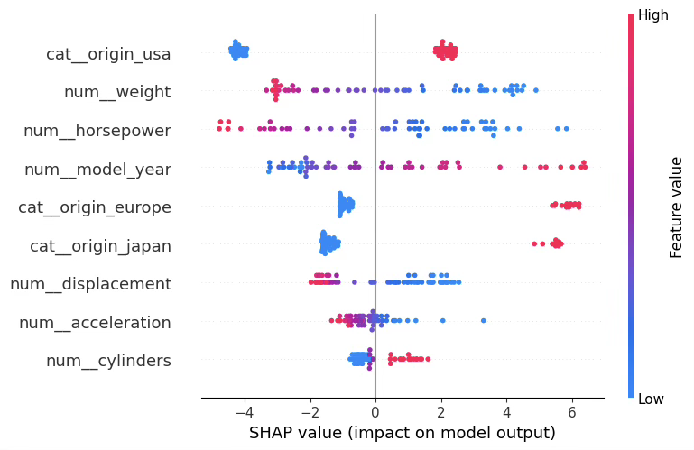
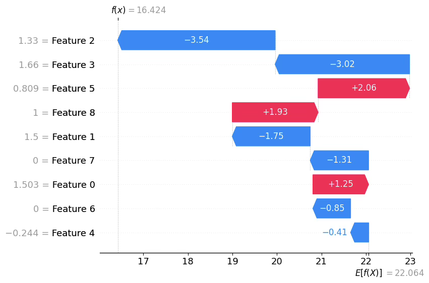

MLDL 예측방법 | 딥러닝 회귀
딥러닝 회귀모형
1. MLP 회귀 개념
딥러닝 회귀란?
딥러닝 회귀는 입력 x로부터 연속형 반응변수 y 를 예측하는 문제다. 목표는 관측치 \((x_{i},y_{i})\)에 대해 예측값 \({\widehat{y}}_{i}\)가 실제 \(y_{i}\)와 가깝도록, 모형의 파라미터 \(\theta\)를 학습(최적화)하는 것이다. 선형회귀는 x의 선형결합만으로 \(\widehat{y}\)를 표현하지만, 딥러닝은 하나 이상의 은닉층(hidden layer) 과 비선형 활성화함수(activation) 를 통해 복잡한 비선형 관계, 변수 간 상호작용, 국소적 패턴을 데이터로부터 자동으로 학습할 수 있다.
특히 2차원(행x열) 데이터에서도 딥러닝이 의미 있는 성능을 보이는 경우가 있으나, 데이터의 규모와 잡음 수준, 범주형 변수의 구조와 처리 방식에 따라 전통적 트리 기반 앙상블(예: 랜덤포레스트, 부스팅) 이 더 강력한 기준선이 될 수 있다. 따라서 실제 적용에서는 딥러닝 모델을 사용하더라도 트리 앙상블과의 성능 비교를 함께 수행하는 것이 바람직하다.
MLP 회귀란?
그림은 MLP(다층 퍼셉트론)를 회귀 문제에 적용했을 때의 전형적인 구조를 보여준다. 목표는 입력 변수들로부터 연속형 반응변수 y 를 예측하는 것이며, 입력이 여러 층을 거치며 점점 더 ”가공된 표현”으로 변환된 뒤 최종 예측값을 만든다.

먼저 입력층은 데이터의 설명변수(특징)들이 신경망으로 들어오는 통로이다. 이 층은 보통 스스로 학습을 하지는 않고, 관측된 값을 다음 층으로 전달한다. 실제로 모델이 복잡한 패턴을 학습하는 능력은 입력층이 아니라 은닉층의 구조와 변환 방식에서 결정된다.
가운데의 은닉층(hidden layer) 들은 MLP의 핵심이다. 그림처럼 각 은닉층은 대개 완전연결(fully connected) 구조로 되어 있어, 한 층의 모든 노드가 다음 층의 모든 노드와 연결된다. 이 연결 강도(가중치)와 각 노드의 기준점(편향)이 학습을 통해 조정되며, 이를 통해 입력 정보가 층을 지날수록 단순한 원자료 형태에서 벗어나 예측에 유리한 새로운 특징 표현으로 변환된다.
또한 은닉층에는 활성화 함수(그림에서는 LReLU)가 적용되어, 단순한 직선 관계만 표현하는 것이 아니라 복잡한 비선형 관계나 변수 간 상호작용까지 포착할 수 있다. 이런 비선형 변환이 반복될수록 모델은 더 다양한 패턴을 담아낼 수 있는데, 이것이 ”깊게 쌓는다”는 의미와 연결된다.
그림에 표시된 Dropout은 학습 과정에서 일부 연결 또는 노드를 임의로 제외하는 방식으로, 특정 경로에만 지나치게 의존하는 것을 막아 과적합을 완화하려는 장치다. 결과적으로 모델이 데이터의 우연한 잡음에 맞춰지기보다, 보다 일반적인 패턴을 학습하도록 돕는다.
마지막의 출력층(output layer) 은 최종 예측값을 내는 단계로, 문제 유형에 따라 설계가 달라진다. 이 그림은 회귀를 다루므로 출력은 보통 선형(항등) 형태로 두어 예측값이 실수 전 범위를 자유롭게 가질 수 있게 한다.
반면 분류 문제라면 출력이 확률처럼 해석되어야 하므로 sigmoid나 softmax처럼 값의 범위를 제한하는 형태를 사용한다. 요약하면 출력층은 ”모델이 내놓는 값이 어떤 성격(연속값/확률)을 갖는가”를 결정하는 마지막 관문이다.
전체적으로 MLP 회귀는 입력 → 은닉층(표현 학습) → 출력이라는 흐름 속에서, 예측이 잘 되도록 내부 연결 강도와 기준점을 학습해 나가는 방식이다. 이후에는 손실함수 선택, 최적화 방법, 과적합 제어(드롭아웃 외 정규화 등)를 어떻게 설계하느냐가 실제 성능을 좌우하게 된다.
MLP의 구성(은닉층, 출력층)과 역할
MLP(Multi-Layer Perceptron)는 입력층–은닉층–출력층으로 이루어진 전형적인 순전파(feedforward) 신경망이다. 순전파 신경망에서는 입력 x가 주어졌을 때 예측값 \(\widehat{y}\)를 계산하는 정보의 흐름이 입력층 → 은닉층 → 출력층 방향으로만 진행되며, 중간에 되돌아가는 연결(순환)은 없다.
예를 들어 2층(은닉층 1개, 출력층 1개) MLP는 다음과 같이 표현할 수 있다. 은닉층에서 \(z^{(1)} = W^{(1)}x + b^{(1)},a^{(1)} = \phi\left( z^{(1)} \right)\),
출력층에서 \(z^{(2)} = W^{(2)}a^{(1)} + b^{(2)},\widehat{y} = g\left( z^{(2)} \right)\)로 계산한다.
회귀 문제의 경우 출력층 활성함수 g는 보통 항등함수(선형 출력) 를 사용하여 \(\widehat{y}\)가 실수 전체 범위를 가질 수 있게 한다. 즉, 순전파의 목적은 ”현재 파라미터 (W,b)로 예측을 얼마나 잘하는가”를 계산하는 데 있다.
반면 역전파(backpropagation) 는 손실 L을 줄이기 위해 각 가중치와 편향이 손실에 미치는 영향을 계산하는 과정이다. 구체적으로 \(\frac{\partial L}{\partial W},\frac{\partial L}{\partial b}\)와 같은 기울기(gradient) 를 구하며, 핵심 원리는 연쇄법칙(chain rule) 이다.
따라서 오차(또는 손실의 변화)는 출력층에서부터 시작해 은닉층 방향으로 단계적으로 전파되며, 이를 통해 모든 층의 파라미터에 대한 기울기를 효율적으로 계산할 수 있다.
입력층은 데이터의 특징벡터 x가 신경망으로 들어오는 입구에 해당한다. 일반적으로 입력층 자체는 학습 가능한 변환을 수행하지 않고, 관측된 값을 다음 층으로 전달하는 역할을 한다. 따라서 모델이 어떤 형태의 관계를 표현할 수 있는지는 입력층보다는 은닉층의 구조와 변환 방식에 의해 좌우된다.
은닉층(hidden layer)은 하나 이상 둘 수 있으며, 각 은닉층은 이전 층의 출력을 입력으로 받아 선형변환과 비선형변환을 순차적으로 적용한다. 예를 들어 은닉층의 한 뉴런은 \(z = w^{\top}x + b,h = g(z)\)와 같이 입력 x의 가중합 \(w^{\top}x\)에 편향 b를 더해 z를 만든 뒤, 활성화 함수 \(g( \cdot )\)를 통과시켜 출력 h를 생성한다.
이때 활성화 함수가 비선형이기 때문에, MLP는 단순 선형모형으로는 표현하기 어려운 복잡한 비선형 관계나 변수 간 상호작용까지 학습할 수 있다. 반대로 활성화 함수를 사용하지 않고 모든 층이 선형변환만 수행한다면, 여러 층을 쌓더라도 전체는 결국 하나의 선형변환과 동치가 되어 ”깊게 쌓는 의미”가 크게 줄어든다.
결국 딥러닝에서 말하는 ”딥(deep)“이란 은닉층을 여러 개 두고 비선형 변환을 반복 적용함으로써, 모델의 표현력(주어진 구조(층 수, 뉴런 수, 활성화 함수 등)가 얼마나 다양한 함수 f(x) 를 ”근사해서” 표현할 수 있는가?)을 크게 확장하는 것을 의미한다.
MLP의 각 은닉층은 대개 완전연결(fully connected, dense) 구조로 구성된다. 이는 한 층의 모든 뉴런이 다음 층의 모든 뉴런과 연결되는 형태로, 층 간 연결은 가중치 행렬 W (및 편향 b)로 요약된다.
따라서 MLP의 학습은 데이터가 주어졌을 때 손실함수 L(예: MSE, MAE 등)를 최소화하도록 파라미터 (W,b) 를 반복적으로 조정하는 과정이다. 실제 업데이트는 역전파로 계산된 기울기 \(\nabla_{W,b}L\)을 이용해 경사하강법 계열 알고리즘(예: SGD, Adam 등)으로 수행된다.
출력층(output layer)은 문제 유형에 맞게 출력값의 범위와 해석을 결정하도록 설계한다. 회귀 문제에서는 예측값이 실수 전 범위를 가질 수 있어야 하므로 출력층에 보통 항등함수(선형 출력) 를 두어 \(\widehat{y} \in \mathbb{R}\)이 되게 한다.
반면 분류 문제에서는 출력이 확률로 해석되어야 하므로 제약을 만족시키는 활성화를 사용한다. 이진 분류는 \(0 \sim 1\)범위의 확률을 위해 sigmoid를, 다중 분류는 각 클래스 확률의 합이 1이 되도록 softmax를 출력층에 적용한다. 요약하면 출력층은 ”모형이 내놓는 값이 연속값인지, 확률인지”를 규정하는 최종 변환 단계로 이해할 수 있다.
시그모이드(sigmoid) 함수는 실수 입력을 받아 값을 0과 1 사이로 압축해 주는 대표적인 S자 형태의 함수입니다. 이진분류에서 ”확률”처럼 해석 가능한 출력을 만들 때 사용된다. \(\sigma(z) = \frac{1}{1 + e^{- z}}\), 여기서 입력 \(z \in \mathbb{R}\), 출력은 \(\sigma(z) \in (0,1)\)이다.
2. MLP 회귀 방법론
(1) 문제 설정
관측치 \(\{(x_{i},y_{i})\}_{i = 1}^{n}\)가 주어졌을 때, \(x_{i} \in \mathbb{R}^{p},y_{i} \in \mathbb{R}\)(연속형)라 하자. 딥러닝 회귀의 목표는 함수 \(f( \cdot ;\theta)\)를 학습하여 \({\widehat{y}}_{i} = f(x_{i};\theta)\)가 실제 \(y_{i}\)와 가깝도록 파라미터 \(\theta\)를 추정하는 것이다. 일반적으로 학습은 훈련 데이터에서의 평균 손실을 최소화하는 최적화 문제로 표현된다.
\(\min_{\theta}\frac{1}{n}\overset{n}{\sum_{i = 1}}L\left( y_{i},f(x_{i};\theta) \right)\), 여기서 \(L( \cdot , \cdot )\)는 손실함수(MSE/MAE/Huber 등)이다.
(2) 모형 구조: 완전연결 MLP(Feedforward Network)
단일 은닉층(가장 단순한 MLP 회귀)
은닉층이 1개인 MLP 회귀는 다음과 같이 쓸 수 있다.
\(\widehat{y} = f(x) = W_{2}g(W_{1}x + b_{1}) + b_{2}\), \(x \in \mathbb{R}^{p}\)
은닉층 노드 수를 m이라 하면 \(W_{1} \in \mathbb{R}^{m \times p},b_{1} \in \mathbb{R}^{m}\) 출력층(회귀)에서 \(W_{2} \in \mathbb{R}^{1 \times m},b_{2} \in \mathbb{R}\), \(g( \cdot ):ReLU,tanh\) 등 비선형 활성화 함수이다.
핵심은 \(g( \cdot )\)가 비선형이기 때문에, 단순한 선형회귀(\(\widehat{y} = \beta^{\top}x + \beta_{0}\))보다 훨씬 넓은 함수족을 표현할 수 있다는 점이다.
다층 MLP(은닉층 L-1개, 출력층 1개)
은닉층이 여러 개인 경우, 층 \(\ell\)의 선형결합과 활성화 출력을
\(z^{(\ell)} = W_{\ell}a^{(\ell - 1)} + b_{\ell},a^{(\ell)} = g_{\ell}\left( z^{(\ell)} \right)\)로 두고 a^{(0)}=x라 하자. 회귀에서는 출력층을 보통 선형으로 두어 \(\widehat{y} = z^{(L)} = W_{L}a^{(L - 1)} + b_{L}\)로 놓는다. (즉, 출력층 활성화는 항등함수)
”비선형이 없으면 깊이의 의미가 사라짐”
만약 모든 층에서 활성화를 쓰지 않고 선형만 적용하면, \(W_{L}(W_{L - 1}(\cdots(W_{1}x)\cdots)) = \overset{˜}{W}x\) 꼴로 합쳐져 결국 하나의 선형모형과 동치가 된다. 따라서 MLP의 표현력은 비선형 활성화의 반복 합성에서 나온다.
(3) 활성화 함수(Activation) 선택
대표 활성화들의 형태는 다음과 같다.
- ReLU \(ReLU(t) = \max(0,t)\)
- Leaky ReLU \(LReLU(t) = \max(\alpha t,t)(\alpha \in (0,1))\)
- tanh \(\tanh(t) = \frac{e^{t} - e^{- t}}{e^{t} + e^{- t}}\)
실무적으로 표 데이터 MLP에서는 은닉층에 ReLU/LReLU가 기본 선택인 경우가 많다(학습 안정성과 기울기 소실 완화 측면).
(4) 출력층 설계(Regression Output Design)
일반 회귀(범위 제약 없음)
\(y \in \mathbb{R}\)이면 출력층은 선형(항등)으로 \(\widehat{y} \in \mathbb{R}\)이 되게 한다.
범위 제약이 있는 회귀(선택 사항)
- \(y \in (0,1)\) (비율/확률형 반응): \(\widehat{y} = \sigma(z^{(L)})(\sigma:\text{sigmoid})\)
- \(y > 0\) (양수 반응): \(\widehat{y} = \exp(z^{(L)})\text{또는}\widehat{y} = \log(1 + e^{z^{(L)}})(\text{softplus})\)
- \(y \in \lbrack a,b\rbrack\): \(\widehat{y} = a + (b - a)\sigma(z^{(L)})\)
이렇게 하면 예측값이 반응변수의 자연스러운 범위를 자동으로 만족한다.
(5) 손실함수: MSE / MAE / Huber
딥러닝 회귀에서 손실함수는 ”무엇을 잘 맞출 것인가”를 결정한다. 같은 네트워크 구조라도 손실함수가 달라지면 학습되는 함수의 성질이 달라질 수 있으며, 특히 이상치(outlier), heavy-tail 오차, 비대칭 비용 구조가 있을 때 손실 선택은 성능과 해석을 좌우한다.
MSE(평균제곱오차)
\(\text{MSE} = \frac{1}{n}\overset{n}{\sum_{i = 1}}(y_{i} - {\widehat{y}}_{i})^{2}\). MSE는 오차를 제곱하므로 큰 오차에 훨씬 큰 페널티를 부과한다. 즉 ”크게 틀리는 것”을 강하게 억제하는 방향으로 학습이 진행된다. 오차가 정규분포(가우시안)이고 등분산이라는 가정에서는 MSE 최소화가 통계적으로 자연스러운 선택이며, 최적화 관점에서도 미분이 매끄러워 학습이 안정적으로 진행되는 경우가 많다. 반면 이상치가 존재하면 일부 관측치가 손실을 지배하여, 전체 패턴보다 특정 이상치에 맞춘 방향으로 모델이 끌려갈 수 있다.
MAE(평균절대오차)
\(\text{MAE} = \frac{1}{n}\overset{n}{\sum_{i = 1}}|y_{i} - {\widehat{y}}_{i}|\). MAE는 오차를 절대값으로 평가하므로 MSE보다 이상치에 덜 민감하다. 따라서 노이즈가 크거나 오차분포가 heavy-tail인 데이터에서 더 강건한 예측을 제공하는 경우가 있다. 다만 절대값은 0에서 미분불가능하므로(실제로는 서브그라디언트로 처리), 학습이 다소 느리거나 불안정해지는 상황이 있을 수 있다. 또한 MAE는 큰 오차를 MSE만큼 강하게 벌하지 않으므로, ”큰 실수를 반드시 줄여야 하는” 상황에서는 부적절할 수 있다.
Huber 손실(절충형)
Huber 손실은 작은 오차 구간에서는 제곱오차처럼, 큰 오차 구간에서는 절대오차처럼 동작하도록 설계된 절충형 손실이다.
\[L_{\delta}(r) = \{\begin{matrix} \frac{1}{2}r^{2}, & |r| \leq \delta \\ \lbrack 4pt\rbrack\delta\left( |r| - \frac{1}{2}\delta \right), & |r| > \delta \end{matrix}(r = y - \widehat{y})\]
\(\delta\)는 ”언제부터 큰 오차로 간주할 것인가”를 결정하는 임계값이다. Huber 손실은 MSE의 최적화 안정성과 MAE의 강건성을 일부씩 가져가며, 실제 회귀 문제에서 MSE와 MAE 중 어느 쪽도 확신하기 어려울 때 실무적으로 자주 선택된다. 특히 중간 정도의 이상치가 존재하거나, 소수의 큰 이상치가 전체 학습을 망치는 것을 방지하고 싶을 때 유용하다.
손실 선택의 해석적 관점
손실은 단순히 ”평가척도”가 아니라 ”학습 목표”다.
- MSE를 쓰면 모델은 조건부 평균 \mathbb{E}[Y|X=x]에 가까운 값을 맞추는 성질을 갖는다.
- MAE를 쓰면 모델은 조건부 중앙값(median)에 가까운 값을 맞추는 성질이 강해진다.
따라서 평균이 의미 있는지, 중앙값이 의미 있는지, 이상치가 구조적 정보인지(예: 실제 극단상황) 단순 오류인지에 따라 손실 선택을 해석적으로 결정할 수도 있다.
(6) 정규화(Regularization)와 과적합 제어
딥러닝은 매우 유연한 함수근사기이기 때문에 훈련 데이터에 지나치게 맞추는 과적합(overfitting)이 쉽게 발생한다. 전형적인 징후는 훈련 손실은 계속 감소하는데 검증(validation) 손실이 어느 시점부터 증가하거나 정체되는 현상이다. 따라서 딥러닝 회귀에서는 ”모형을 크게 만드는 것”만큼이나 ”일반화 성능을 유지하는 것”이 핵심이다.
데이터 분할과 검증 기반 학습
딥러닝은 학습 중 모델이 계속 변하므로, 학습 과정에서 검증셋을 사용하여 일반화 성능을 모니터링하는 것이 필수적이다. 일반적으로 Train/Validation/Test로 나누고, 학습 중 의사결정(조기종료, 하이퍼파라미터 선택)은 Validation 기준으로 수행하며, 최종 보고는 Test로 한다. 특히 데이터가 작을수록 검증셋의 분산이 커지므로, 여러 번의 반복 실험(시드 변경) 또는 교차검증적 사고방식이 필요하다.
Early Stopping(조기 종료)
검증 손실 \(L_{val}\)이 더 이상 감소하지 않으면 학습을 중단한다. 이는 사실상 강력한 정규화로 작동한다(특히 표 데이터에서 효과적).
가장 강력하면서 구현도 쉬운 정규화 방법이 조기 종료다. 검증 손실이 더 이상 개선되지 않는 시점에서 학습을 중단하고, 그 이전의 ”최고 성능 가중치”를 복원하여 사용한다. 조기 종료는 사실상 ”학습을 너무 오래 하지 않음으로써 모델 복잡도를 제한”하는 효과가 있으며, 별도의 패널티를 추가하지 않아도 과적합을 크게 줄이는 경우가 많다. 실무에서는 patience(예: 10 epoch 동안 개선 없으면 종료)를 두어 일시적 흔들림에 과민 반응하지 않도록 한다.
가중치 감쇠(Weight Decay, L2 정규화)
가중치가 지나치게 커지면 모델 출력이 입력의 작은 변화에도 크게 흔들릴 수 있다. 이를 억제하기 위해 목적함수에 패널티를 추가한다.
\(\min_{\theta}\frac{1}{n}\overset{n}{\sum_{i = 1}}L\left( y_{i},f(x_{i};\theta) \right) + \lambda\overset{L}{\sum_{\ell = 1}} \parallel W_{\ell} \parallel_{F}^{2}\), 여기서 \(\parallel W \parallel_{F}^{2} = \sum_{jk}W_{jk}^{2}\)이다.\(\lambda\)가 클수록 가중치를 더 강하게 줄여 모델이 매끄러워지고, 과적합이 줄어들 가능성이 커진다. 딥러닝 프레임워크에서는 보통 ”weight decay”라는 이름으로 제공되며, AdamW처럼 옵티마이저 차원에서 더 안정적으로 구현된 방식이 널리 쓰인다.
Dropout
은닉층 활성값 \(a^{(\ell)}\)에 대해 마스크 \(m^{(\ell)} \sim Bernoulli(q)\)를 적용한다. \({\overset{˜}{a}}^{(\ell)} = m^{(\ell)} \odot a^{(\ell)}\)(학습 시 일부 뉴런을 확률적으로 제거). 구현 방식에 따라 ”inverted dropout”을 사용하면 학습 시 \({\overset{˜}{a}}^{(\ell)} = \frac{m^{(\ell)}}{q} \odot a^{(\ell)}\)로 스케일을 보정하여 테스트 시 별도 보정 없이 사용한다.
Dropout은 학습 중 은닉 유닛을 일정 확률로 임의로 ”끄는” 방식이다. 이렇게 하면 특정 유닛이나 특정 입력 패턴에 과도하게 의존하기 어렵게 되어 일반화가 좋아지는 효과가 나타난다. 직관적으로는 많은 서로 다른 하위 네트워크를 학습해 평균내는 앙상블 효과에 가깝다. 다만 회귀 문제에서 dropout 비율을 너무 크게 잡으면 예측이 불안정해질 수 있으므로, 검증 성능을 기준으로 적절한 범위를 탐색해야 한다.
데이터 관점의 정규화: 증강과 잡음(Data-Centric Regularization)
과적합은 모델 구조나 규제항만으로 결정되는 문제가 아니라, 데이터의 다양성과 품질에 의해 크게 좌우된다. 이미지 분야에서는 회전·자르기 등 데이터 증강(data augmentation) 이 대표적이지만, 회귀 문제에서도 유사한 관점의 ”데이터 기반 정규화”를 적용할 수 있다. 예를 들어 입력 변수에 매우 작은 확률적 변동을 더하는 노이즈 주입(noise injection) 은 모델이 특정 관측치의 미세한 변동에 과도하게 맞춰지는 것을 완화하고, 보다 안정적인 패턴을 학습하도록 유도한다.
또한 일반화 성능은 학습 데이터 구성 방식에도 영향을 받는다. 문제 특성에 맞는 샘플링 전략(예: 불균형한 구간의 재표본화, 시간순 데이터의 적절한 분할) 을 통해 학습 분포를 안정화할 수 있으며, 데이터의 신뢰도를 떨어뜨리는 요소인 이상치(outlier), 누락값(missingness), 측정 오류, 스케일 불일치 등을 어떻게 처리하느냐가 모델의 과적합 여부를 실질적으로 좌우하는 경우가 많다.
특히 표 형태 데이터에서는 복잡한 정규화 기법을 추가하기보다, 변수 전처리(스케일링/변환), 누락값 처리, 이상치 처리, 범주형 인코딩의 적절성 같은 데이터 품질 관리가 성능에 더 큰 영향을 미치는 경우가 흔하다. 즉, 표 데이터 회귀에서는 ”모델을 규제하는 것”만큼이나 ”데이터를 정돈하고 신뢰도를 높이는 것”이 일반화 성능 향상의 핵심 전략이 된다.
모델 용량 조절(Architecture Control)
과적합은 단순히 정규화(regularization)만으로 항상 해결되지 않는다. 모델 자체의 용량(capacity) 이 데이터 규모에 비해 지나치게 크면, 규제를 걸더라도 훈련 데이터의 우연한 패턴(잡음)까지 학습해 훈련 성능만 좋아지고 검증 성능은 오히려 나빠지는 현상이 쉽게 나타난다. 특히 데이터가 크지 않은 표 형태(tabular) 데이터에서는 ”깊고 넓은” MLP가 이런 문제를 유발하는 경우가 흔하다.
따라서 MLP 회귀에서는 학습 전에부터 모델 용량을 적절히 설계·제한하는 것이 중요하다. 구체적으로는 은닉층의 층 수(깊이) 와 각 층의 노드 수(너비) 를 조절하고, 활성화 함수의 선택, Batch Normalization 같은 정규화 레이어의 사용 여부, 그리고 드롭아웃/가중치 감쇠 등과의 조합을 함께 고려해야 한다.
기본 원칙은 ”데이터가 작을수록 단순한 구조에서 시작한다” 이다. 검증 성능이 개선되지 않는데도 모델만 더 키우는 것은 대개 올바른 방향이 아니며, 이 경우에는 구조를 확장하기보다 정규화 강화, 조기 종료, 입력/타깃 스케일링 점검, 변수 설계(특히 범주형 처리) 개선 등 다른 요인을 먼저 점검하는 것이 합리적이다.
(7) 입력/타깃 전처리(Scaling & Encoding)
연속형 입력 표준화
연속형 변수 \(x_{j}\)는 보통 \(x_{ij}' = \frac{x_{ij} - \mu_{j}}{s_{j}}\)로 표준화한다. (훈련 데이터 기준 \(\mu_{j}\), \(s_{j}\) 추정 후 검증/테스트에 동일 적용)
경사하강법 기반 최적화는 스케일에 민감하므로 표준화는 수렴과 안정성을 크게 개선한다.
범주형 변수: 원-핫과 임베딩
원-핫: 범주 \(c \in \{ 1,\ldots,K\} - > e_{c} \in \{ 0,1\}^{K}\)로 변환
임베딩: 임베딩 행렬 \(E \in \mathbb{R}^{K \times d}\)를 두고 범주 c에 대해 \(v = E_{c,:} \in \mathbb{R}^{d}\)로 저차원 연속 표현을 학습한다(특히 K가 큰 경우 유리).
타깃 y 표준화(선택)
\(y_{i}' = \frac{y_{i} - \mu_{y}}{s_{y}}\)로 학습한 뒤 예측에서 역변환하면(\(\widehat{y} = s_{y}{\widehat{y}}' + \mu_{y}\)) 수렴이 더 안정적인 경우가 있다.
(8) 최적화(Optimization): 미니배치 SGD와 Adam
미니배치 목적함수
미니배치 \(B \subset \{ 1,\ldots,n\}\)에 대해 \({\widehat{\mathcal{L}}}_{B}(\theta) = \frac{1}{|B|}\sum_{i \in B}L\left( y_{i},f(x_{i};\theta) \right)\)를 사용하여 반복 갱신한다.
SGD 업데이트(기본형)
\(\theta_{t + 1} = \theta_{t} - \eta\nabla_{\theta}{\widehat{\mathcal{L}}}_{B}(\theta_{t})\), 여기서 \(\eta\)는 학습률이다.
Adam 업데이트(대표적 적응적 방법)
기울기 \(g_{t} = \nabla_{\theta}{\widehat{\mathcal{L}}}_{B}(\theta_{t})\)에 대해 \(m_{t} = \beta_{1}m_{t - 1} + (1 - \beta_{1})g_{t},v_{t} = \beta_{2}v_{t - 1} + (1 - \beta_{2})g_{t}^{2}\)
편향 보정: \({\widehat{m}}_{t} = \frac{m_{t}}{1 - \beta_{1}^{t}},{\widehat{v}}_{t} = \frac{v_{t}}{1 - \beta_{2}^{t}}\)
업데이트: \(\theta_{t + 1} = \theta_{t} - \eta\frac{{\widehat{m}}_{t}}{\sqrt{{\widehat{v}}_{t}} + \epsilon}\).
표 데이터 MLP에서 Adam/AdamW가 기본 출발점으로 자주 쓰인다.
(9) 하이퍼파라미터 설계 포인트(표 데이터 기준)
MLP 회귀의 성능은 구조·정규화·최적화의 조합에 크게 좌우된다.
- 구조: L (층 수), 각 층 폭 m_\ell
- 활성화: ReLU/LReLU/tanh
- 손실: MSE/MAE/Huber(\delta)
- 정규화: weight decay \lambda, dropout rate, early stopping
- 최적화: Adam/AdamW, 학습률 \eta, 배치 크기, 스케줄링
(10) 역전파(Backpropagation)
학습의 핵심은 손실의 기울기 \(\nabla_{\theta}L\)를 효율적으로 계산하는 것이다. 다층 구조에서는 연쇄법칙을 이용해 출력층에서부터 오차 신호를 뒤로 전달한다.
역전파는 ”분류 전용 기법”이 아니라, 신경망이 어떤 문제(회귀/분류)를 풀든 손실함수를 최소화하기 위해 가중치·편향의 기울기(gradient) 를 계산하는 표준 방법이에요.
- 순전파(feedforward): 입력 x → 예측값 \hat y 계산
- 손실 계산: 회귀면 보통 MSE/MAE/Huber 등으로 y와 \hat y의 차이를 수치화
- 역전파(backprop): 그 손실이 각 층의 W,b에 얼마나 영향을 받는지 \(\partial L/\partial W,\partial L/\partial b\)를 연쇄법칙으로 계산
- 최적화(Adam/SGD 등): 계산된 기울기로 파라미터 업데이트
표기(Forward 정의)
L층 신경망(마지막 L층이 출력층)에서 입력 \(a^{(0)} = x\), 각 층 \(\ell = 1,\ldots,L\)에서 \(z^{(\ell)} = W_{\ell}a^{(\ell - 1)} + b_{\ell},a^{(\ell)} = g_{\ell}\left( z^{(\ell)} \right)\)이다.
회귀에서 마지막 층은 선형 출력이므로 \(g_{L}(t) = t, \Rightarrow a^{(L)} = z^{(L)} = \widehat{y}\) . 벡터 출력 회귀면 \(\widehat{y} \in \mathbb{R}^{d}\)로 동일하게 성립한다.
손실(MSE)
단일 관측치 기준으로 MSE를 \(\mathcal{L} = \frac{1}{2} \parallel \widehat{y} - y \parallel_{2}^{2}\)로 두면(앞의 \(\frac{1}{2}\)는 미분을 단순화하려는 관례)
\(\delta^{(\ell)}\) 정의
각 층의 오차 신호를 \(\delta^{(\ell)} \equiv \frac{\partial\mathcal{L}}{\partial z^{(\ell)}}\)로 정의한다. 즉, \(\delta^{(\ell)}\)는 ”층 \(\ell\)의 선형결합 \(z^{(\ell)}\)에 대한 손실의 기울기”이다.
출력층에서 시작(기저식)
(A) 선형 출력 + MSE인 경우: \(\delta^{(L)} = \frac{\partial\mathcal{L}}{\partial z^{(L)}} = \frac{\partial\mathcal{L}}{\partial\widehat{y}} \cdot \frac{\partial\widehat{y}}{\partial z^{(L)}}\), 여기서 \(\frac{\partial\mathcal{L}}{\partial\widehat{y}} = \widehat{y} - y\)이고 선형 출력이므로 \(\frac{\partial\widehat{y}}{\partial z^{(L)}} = I\)이다. 따라서 \(\delta^{(L)} = \widehat{y} - y\)이다. 참고로 만약 손실을 \(\parallel \widehat{y} - y \parallel^{2}\)처럼 \(\frac{1}{2}\)없이 정의하면 \(\delta^{(L)} = 2(\widehat{y} - y)\)가 되므로 상수 계수 차이이다.
은닉층으로의 전파(재귀식)
은닉층 \(\ell = L - 1,\ldots,1\)에 대해 \(\delta^{(\ell)} = \frac{\partial\mathcal{L}}{\partial z^{(\ell)}}\)이다. 연쇄법칙을 적용하면 \(\delta^{(\ell)} = \left( W_{\ell + 1}^{\top}\delta^{(\ell + 1)} \right) \odot g_{\ell}'\left( z^{(\ell)} \right)\), 여기서 \(W_{\ell + 1}^{\top}\delta^{(\ell + 1)}\)는 ”다음 층의 오차를 현재 층으로 전달”, \(g_{\ell}'(z^{(\ell)})\) 은 ”현재 층 활성화의 기울기”, 그리고 \(\odot\)는 원소별(elementwise) 곱이다.
파라미터 기울기(각 층 \(W_{\ell},b_{\ell}\))
각 층 \(\ell = 1,\ldots,L\)에 대해 다음이 성립한다.
- 가중치 기울기: \(\frac{\partial\mathcal{L}}{\partial W_{\ell}} = \delta^{(\ell)}\left( a^{(\ell - 1)} \right)^{\top}\)
- 편향 기울기: \(\frac{\partial\mathcal{L}}{\partial b_{\ell}} = \delta^{(\ell)}\)
편향은 각 뉴런에 더해지는 항이므로 미분하면 그대로 \(\delta^{(\ell)}\)가 남는다.
미니배치/전체 데이터로 확장
미니배치 B에서 평균 손실을 \(\mathcal{L}_{B} = \frac{1}{|B|}\sum_{i \in B}\mathcal{L}_{i}\)로 두면, 기울기도 평균으로 합쳐진다.
\[\frac{\partial\mathcal{L}_{B}}{\partial W_{\ell}} = \frac{1}{|B|}\sum_{i \in B}\frac{\partial\mathcal{L}_{i}}{\partial W_{\ell}},\frac{\partial\mathcal{L}_{B}}{\partial b_{\ell}} = \frac{1}{|B|}\sum_{i \in B}\frac{\partial\mathcal{L}_{i}}{\partial b_{\ell}}\]
요약
정의: \(\delta^{(\ell)} = \partial\mathcal{L}/\partial z^{(\ell)}\)
출력층(선형+MSE): \(\delta^{(L)} = \widehat{y} - y\)
전파: \(\delta^{(\ell)} = (W_{\ell + 1}^{\top}\delta^{(\ell + 1)}) \odot g_{\ell}'(z^{(\ell)})\)
기울기: \(\frac{\partial\mathcal{L}}{\partial W_{\ell}} = \delta^{(\ell)}(a^{(\ell - 1)})^{\top},\frac{\partial\mathcal{L}}{\partial b_{\ell}} = \delta^{(\ell)}\)
3. 확장: Quantile / 분포 예측(불확실성)
MLP 회귀에서 흔히 하는 것은 \(\widehat{y}\) 하나를 내는 점예측(point prediction) 이다. 그러나 실제 의사결정에서는 ”예측값이 얼마인가”뿐 아니라 ”얼마나 확신할 수 있는가”가 함께 중요하다. 예를 들어 재고관리에서는 평균 수요보다 상위 분위수(예: 0.9-quantile) 가 더 중요할 수 있고, 위험관리·품질관리에서는 예측의 불확실성 자체가 핵심 정보가 된다.
딥러닝 회귀는 이러한 요구를 반영하여 크게 두 방향으로 확장될 수 있다. (1) 조건부 분위수(quantile) 자체를 직접 예측하거나, (2) 조건부 분포 \(Y \mid X = x\)를 가정하고 분포의 모수(또는 분포 전체)를 예측하는 방식이다.
(1) 분위수(Quantile) 회귀
분위수 회귀는 조건부 평균 \(\mathbb{E}\lbrack Y \mid X\rbrack\) 대신, 조건부 분위수 \(Q_{\tau}(Y \mid X = x)\)를 예측한다. 이를 위해 손실함수로 핀볼 손실(pinball loss) 을 사용한다. 한 관측치 \((y,\widehat{y})\)에 대해
\(L_{\tau}(y,\widehat{y}) = \{\begin{matrix} \tau(y - \widehat{y}), & y \geq \widehat{y} \\ \lbrack 4pt\rbrack(1 - \tau)(\widehat{y} - y), & y < \widehat{y} \end{matrix}\)로 정의한다.
\(\tau = 0.5\)이면 중앙값(중위수) 회귀에 해당한다.
\(\tau = 0.9\)이면 ”상위 90% 수준”의 값을 예측하는 것이므로, 보수적인 의사결정(재고/서비스레벨 설정 등)에 유용하다.
또한 여러 \(\tau\) (예: 0.1, 0.5, 0.9)를 동시에 학습하면 예측구간을 구성할 수 있어, 단일 점예측보다 훨씬 풍부한 정보를 제공한다. 예를 들어 \((\tau_{L},\tau_{U}) = (0.1,0.9)\)라면 대략적인 80% 예측구간을 얻는 셈이다.
실무적으로는 \(\tau\)가 여러 개인 경우 분위수 교차가 발생할 수 있으므로, 단조성 제약이나 후처리 등을 고려하기도 한다.
(2) 분포(Distribution) 예측: 조건부 분포를 직접 모델링
또 다른 접근은 \(Y \mid X = x\)의 분포 형태를 가정하고(예: 정규분포), 그 분포의 모수를 신경망이 출력하도록 하는 것이다. 예를 들어 \(Y \mid X = x \sim \mathcal{N}(\mu(x),\sigma^{2}(x))\)를 가정하면, 네트워크는 \(\mu(x)\)와 \(\sigma(x)\)를 예측한다. 분산은 항상 양수여야 하므로 보통 \(\log\sigma(x)\) 또는 \(\log\sigma^{2}(x)\)를 출력하게 설계한다(양수 제약을 자연스럽게 보장하기 위함이다).
이때 학습은 해당 분포의 음의 로그우도를 최소화하는 방식으로 진행된다. 정규분포 가정 하에서 한 관측치에 대한 NLL은 \(NLL(y \mid x) = \frac{1}{2}\log(2\pi\sigma^{2}(x)) + \frac{(y - \mu(x))^{2}}{2\sigma^{2}(x)}\)이며, 전체 데이터에 대해 평균 NLL을 최소화한다.
이 방식의 장점은 예측값(예: 평균 \(\mu(x)\))만 주는 것이 아니라, 입력에 따라 달라지는 불확실성까지 함께 제공한다는 점이다. 특히 \(\sigma^{2}(x)\text{가}x\text{에 따라 변하는 경우}\), 즉 이분산 상황—입력 영역에 따라 오차 크기가 달라지는 상황—에서 점예측보다 더 현실적인 결과를 제공할 수 있다. 예를 들어 ”특정 구간에서는 데이터 변동이 커서 예측이 불확실하다”는 구조를 모델이 명시적으로 반영하게 된다.
4. MLP 외 딥러닝 회귀 대안(선택)
표 형태 데이터에서 딥러닝 회귀는 오랫동안 MLP가 대표적인 선택지로 여겨졌지만, 최근에는 표 데이터가 갖는 구조적 특성—범주형 변수의 비중, 희소한 규칙성, 이산적 분기와 강한 상호작용—을 더 잘 반영하려는 다양한 설계가 등장했다. 또한 예측값 하나를 내는 점예측(point prediction) 을 넘어, 예측의 신뢰도를 함께 제시하는 불확실성(uncertainty) 추정까지 요구되는 경우가 늘면서, 딥러닝 회귀의 확장 방향도 함께 넓어지고 있다.
(1) Wide & Deep
Wide & Deep은 이름 그대로 선형 모형(wide) 과 딥러닝 모형(deep) 을 결합한 구조다. 두 구성요소는 서로 다른 강점을 담당하며, 이를 통해 표 데이터에서 흔히 나타나는 패턴을 보다 안정적으로 포착한다.
- Wide(선형) 부분은 원-핫 인코딩된 범주형 변수, 그리고 필요하다면 변수 간 교호작용(feature crosses)처럼 명시적으로 만들어진 규칙 기반 특징을 빠르게 학습한다. 이는 추천 시스템 문맥에서 흔히 말하는 암기(memorization) 에 해당하며, 특정 범주 조합에서만 나타나는 뚜렷한 규칙(예: ”A 범주 & B 범주일 때만 평균이 급변”)을 효과적으로 잡아낸다.
- Deep(딥) 부분은 임베딩과 비선형 변환을 통해 유사한 사례들 간의 공통 구조를 학습하고, 보지 못한 조합에도 부드럽게 확장되는 일반화(generalization) 를 담당한다. 즉, 연속형 변수의 비선형 관계, 완만한 상호작용, 범주 간 유사성에 기반한 패턴을 MLP가 흡수한다.
두 부분의 결합 핵심은 역할 분담이다. 표 데이터에서 자주 등장하는 ”이산적·규칙 기반 패턴”은 선형(Wide) 쪽이 안정적으로 흡수하고, 그 밖의 복잡한 연속형 관계나 부드러운 상호작용은 딥(Deep) 쪽이 담당하도록 설계한다. 그 결과 MLP 단독보다 학습이 안정적이거나 일반화가 개선되는 경우가 있으며, 특히 범주형 변수가 많고 희소성이 큰 문제(원-핫 차원이 매우 커지는 상황) 에서 유의미한 대안이 될 수 있다.
(2) TabNet
TabNet은 표 형태 데이터에서 ”모든 변수를 한꺼번에 쓰는 MLP”와 달리, 어떤 변수를 언제, 어느 정도까지 볼지를 모델이 스스로 학습하도록 설계된 딥러닝 구조다. 핵심 아이디어는 예측을 한 번에 만들기보다, 여러 번의 순차적 결정 단계(decision step) 를 거치면서 매 단계마다 attention 기반 마스킹(masking) 으로 일부 변수에 집중하고, 그 결과를 누적해 최종 예측으로 연결하는 방식이다. 이런 작동 방식은 트리 모델이 분할을 반복하면서 중요한 변수를 선택해 나가는 과정과 직관적으로 닮아 있어, 표 데이터에 더 ”맞는” 구조로 이해할 수 있다.
TabNet의 특징은 다음과 같이 정리할 수 있다.
- 내재적 변수 선택(implicit feature selection): 각 단계에서 마스크가 특정 변수(또는 변수 그룹)에 가중치를 부여하고 나머지는 덜 보게 만들기 때문에, 결과적으로 모델 내부에서 ”중요한 변수에 집중하고 불필요한 변수는 배제하려는” 성향이 생긴다. 이는 표 데이터에서 흔한 잡음 변수, 중복 변수의 영향을 줄이는 데 도움이 될 수 있다.
- 부분적 설명 가능성(interpretability) 확보: 단계별로 어떤 변수들이 선택(또는 강조)되었는지를 마스크를 통해 확인할 수 있어, 일반적인 MLP보다 ”어떤 변수가 예측에 기여했는가”를 추적하기가 상대적으로 쉽다. 즉 완전한 블랙박스라기보다, 변수 중요도/사용 패턴을 시각화할 수 있는 여지가 있다.
다만 TabNet은 구조상 결정 단계 수, 마스킹의 희소성(sparsity)을 유도하는 관련 파라미터 등 하이퍼파라미터에 민감할 수 있다. 따라서 성능을 안정적으로 확보하려면 단순히 기본값으로 고정하기보다, 검증 성능을 기준으로 단계 수와 sparsity 정도를 포함한 설정을 체계적으로 튜닝하는 것이 중요하다.
(3) Tabular Transformer(표 데이터용 트랜스포머)
트랜스포머(Transformer)는 원래 자연어 처리에서 단어(토큰)들 사이의 관계를 attention으로 학습하는 구조인데, 최근에는 이 아이디어를 표 형태 데이터에 적용하려는 시도들이 활발하다. 표 데이터에서의 핵심은 문장 내 토큰 관계 대신, 변수(열, column)들 사이의 관계를 attention으로 모델링하는 것이다. 즉, ”어떤 변수들이 함께 나타날 때 예측이 어떻게 달라지는가”를 네트워크가 보다 유연하게 학습하도록 만드는 접근이다.
표 데이터에 트랜스포머를 적용하려면 각 열을 ”토큰”처럼 다루기 위한 표현이 필요하다. 범주형 변수는 보통 임베딩 벡터로 바꾸어 토큰처럼 처리할 수 있고, 연속형 변수도 단순히 숫자로 넣기보다는 프로젝션(선형 변환) 또는 임베딩 기반 인코딩을 통해 토큰화한다. 이렇게 구성하면 트랜스포머는 attention을 통해 변수들 간의 상호작용을 폭넓게 탐색하며, 특정 변수 조합에서만 나타나는 패턴이나 복잡한 의존 구조를 비교적 자연스럽게 포착할 수 있다.
다만 표 데이터에서 트랜스포머가 항상 MLP나 트리 앙상블보다 우월한 것은 아니다. 트랜스포머는 일반적으로 파라미터 수가 크고 학습이 민감한 편이라, 데이터 크기가 충분히 크지 않으면 과적합이 발생하기 쉽고, 실전에서는 여전히 트리 기반 앙상블(부스팅 계열) 이 강력한 기준선이 되는 경우가 많다. 따라서 Tabular Transformer는 ”표 데이터 딥러닝의 대표적 대안”으로 소개할 가치가 충분하지만, 실제 적용에서는 동일한 데이터 분할과 튜닝 수준을 맞춘 상태에서 트리 앙상블 및 MLP와의 비교 실험을 함께 수행한다는 메시지를 동반하는 것이 바람직하다.
(4) 시계열 대안: TCN과 Transformer는 ’예고’만
시계열 예측은 입력이 단순 벡터가 아니라 시간 순서(순차 구조)를 갖기 때문에, MLP를 그대로 적용하면 시간 의존성을 충분히 활용하기 어렵다. 이때 대표 대안이 TCN과 시계열 Transformer 계열이다. TCN(Temporal Convolutional Network)은 1차원 합성곱과 dilation을 통해 과거의 넓은 구간 정보를 효율적으로 반영하며, RNN보다 병렬화가 쉬워 학습이 안정적인 장점이 있다. Transformer 계열은 attention으로 장기 의존성을 직접 모델링하며, 계절성/추세/구간 패턴을 유연하게 학습할 수 있어 장기 예측에서 강점을 보인다는 보고가 많다. 다만 시계열은 데이터 구성, 누락, 계절성 처리, 롤링 검증 등 고유의 방법론이 필요하므로 시계열 분야에서 다루기로 한다.
5. MLP 회귀의 장점과 단점
MLP 회귀는 입력 특성 벡터 (x)를 여러 은닉층을 통해 비선형적으로 변환하여 연속형 반응변수 (y)를 예측하는 대표적인 딥러닝 방법이다. 표(tabular) 데이터에서는 전통적으로 트리 앙상블이 강력한 기준선이지만, MLP는 표현 학습(representation learning) 과 유연한 확장성을 바탕으로 특정 조건에서 경쟁력 있는 선택지가 된다.
(1) 장점(Strengths)
복잡한 비선형성과 상호작용을 자동 학습
선형회귀는 선형 결합으로만 관계를 표현하지만, MLP는 은닉층과 활성화함수를 통해 비선형 관계와 변수 간 상호작용을 자연스럽게 학습한다.
즉, ”어떤 형태의 상호작용을 넣어야 하는지”를 사람이 일일이 설계하지 않아도, 데이터가 충분하면 모델이 내부적으로 구조를 찾아낼 수 있다.
입력 표현을 함께 학습(특히 범주형: 임베딩의 장점)
범주형 변수가 많거나 범주 수가 큰 경우, 원-핫 인코딩은 차원을 급격히 늘려 비효율적이 된다. MLP는 범주형을 임베딩(embedding) 으로 표현해 저차원의 연속 벡터로 학습할 수 있어, 고카디널리티 범주형 처리에 유리하고 범주 간 유사성(예: 비슷한 브랜드/차종 등)을 데이터로부터 학습할 수 있다.
목적함수/출력 설계의 유연성(확장성)
MLP는 ”평균값 예측”에만 머물지 않고, 목적과 상황에 따라 다양한 확장이 가능하다.
- 분위수(quantile) 예측 → 예측구간 구성
- 분포 예측(NLL 기반) → 이분산(입력에 따라 불확실성이 달라짐) 반영
- 다중 출력/다중 과제(multi-task) → 여러 타깃을 동시에 학습
이처럼 의사결정에 필요한 정보(불확실성 포함) 를 함께 제공하는 방향으로 확장하기가 쉽다.
미분 가능(differentiable) 구조 → 최적화 및 결합이 용이
신경망은 전체가 미분 가능하므로, 손실 설계나 제약(예: 커스텀 손실, 가중치 패널티, 특정 형태의 규제)을 붙이기 좋다. 또한 다른 신경망 모듈(예: 임베딩, 어텐션, 게이팅 등)과 결합이 쉬워 ”표 데이터 전용 딥러닝(예: Wide&Deep, TabNet, Tabular Transformer)“로 확장하는 기반이 된다.
대규모 데이터/온라인 학습 환경에서의 장점
데이터가 매우 크거나 지속적으로 누적되는 상황에서는 MLP가 효율적으로 학습/업데이트되는 경우가 많다. 특히 대규모 추천·광고·수요예측 환경에서는 임베딩 + MLP 조합이 실무 표준으로 자리 잡은 사례가 많다.
(2) 단점 및 주의점(Weaknesses)
표 데이터에서는 ”데이터 크기”에 민감(과적합 위험)
표 데이터(특히 샘플 수가 크지 않은 경우)에서 MLP는 쉽게 과적합한다. ”깊고 넓은 모델”을 쓰면 훈련 성능은 좋아지지만 검증/테스트 성능이 악화되는 경우가 흔하다. 따라서 모델 용량(층 수·노드 수) 을 과하게 키우기보다, 작은 모델 + 정규화 + 조기종료로 안정적으로 접근해야 한다.
전처리 의존도가 큼(스케일링·결측·이상치)
MLP는 입력 스케일에 민감하며, 결측/이상치/변수 변환의 영향도 크게 받는다. 표 데이터에서는 종종 ”모델을 바꾸는 것”보다 스케일링, 결측치 처리, 이상치 처리, 범주형 인코딩 전략이 성능에 더 큰 영향을 준다.
하이퍼파라미터 민감 + 튜닝 비용
학습률, 배치 크기, 은닉층 구조, 정규화 강도, 드롭아웃, early stopping 기준 등 튜닝 요소가 많고 민감하다. 동일 데이터에서도 설정에 따라 성능 변동이 커서, 검증 기반의 체계적 튜닝이 필요하다.
해석 가능성이 낮음(설명력 요구에 취약)
트리 기반 모델에 비해 ”어떤 변수가 어떤 방식으로 작용했는가”를 직관적으로 설명하기 어렵다. SHAP/퍼뮤테이션 중요도 같은 사후적 설명 기법을 쓸 수는 있지만, 기본적으로는 블랙박스 성격이 강하다.
표 데이터에서 트리 앙상블이 더 강한 경우가 많음
실무적으로 XGBoost/LightGBM 같은 GBDT 계열은 표 데이터에서 매우 강력한 기준선이다. 특히 데이터 규모가 크지 않거나, 규칙 기반 분기/희소 패턴이 강한 문제에서는 트리 앙상블이 MLP를 앞서는 경우가 많다. 따라서 MLP를 적용할 때는 트리 앙상블과의 비교 실험이 사실상 필수다.
재현성과 안정성 이슈(학습 변동)
초기값, 미니배치 샘플링, 하드웨어/라이브러리 환경에 따라 결과가 달라질 수 있다. 따라서 여러 시드로 반복 실험하거나, 검증 성능 분포를 함께 제시하는 것이 바람직하다.
(3) 언제 MLP가 유리한가 / 불리한가(실무적 가이드)
MLP가 유리해질 가능성이 큰 경우
- 데이터가 충분히 크고(또는 지속적으로 누적되고) 패턴이 복잡한 경우
- 범주형 고카디널리티 변수가 많아 임베딩이 효과적인 경우
- 점예측을 넘어 분위수/분포 등 불확실성 예측이 중요한 경우
- 다른 딥러닝 모듈(임베딩, 어텐션 등)과 결합해 확장할 계획이 있는 경우
MLP가 불리한 경우가 많은 조건
- 데이터가 작고 잡음이 큰 표 데이터(과적합 위험 큼)
- 결측/이상치/스케일 문제가 큰데 전처리가 충분히 정리되지 않은 경우
- 강한 규칙 기반 분기(”if-then” 패턴)가 핵심인 문제
- 설명 가능성이 핵심 요구사항인 경우(단순 모델/트리의 장점이 큼)
6. MLP 변수 중요도
(1) 회귀계수와 MLP 중요도
선형회귀는 각 설명변수에 대해 하나의 회귀계수(β)가 존재하며, ”다른 조건이 같을 때 해당 변수가 1 증가하면 예측값이 β만큼 변한다”처럼 고정된(전역적인) 효과로 해석할 수 있다.
반면 MLP 회귀는 여러 은닉층과 비선형 활성화가 연속적으로 결합된 함수이므로, 입력변수의 영향이 입력값의 위치(어떤 관측치인가)에 따라 달라지는 것이 일반적이다. 따라서 선형회귀처럼 ”변수별로 하나의 고정된 회귀계수”를 제시하기 어렵고, MLP에서는 보통 ”회귀계수” 대신 각 층의 가중치와 편향이 학습된다고 말한다.
다만 이는 ’해석이 불가능하다’는 뜻은 아니다. MLP에서 변수의 영향은 보통 다음과 같은 방식으로 평가한다. (1) 특정 관측치 주변에서 변수를 조금 변화시켰을 때 예측이 얼마나 민감하게 변하는지(국소 민감도/기울기), (2) 변수를 무작위로 섞거나 제거했을 때 예측 성능이 얼마나 악화되는지(퍼뮤테이션 중요도), (3) 특정 변수를 변화시키며 평균 예측을 추적하는 방식(부분의존/ICE), (4) SHAP 같은 기여도 분해 방법을 통해 각 변수의 기여를 요약하는 방식 등이다.
정리하면, MLP 회귀는 ”변수별 단일 계수” 대신 ”입력에 따라 달라지는 비선형 효과”를 학습하므로, 해석은 계수표가 아니라 변수 중요도·민감도·부분의존·기여도 같은 도구로 수행하는 것이 적절하다.
(2) MLP 중요도
MLP는 선형회귀처럼 입력변수마다 하나의 ”회귀계수” \(\beta_{j}\)를 추정하는 대신, 각 층의 가중치와 편향 \(\{(W_{\ell},b_{\ell})\}_{\ell = 1}^{L}\)을 학습한다. 중요한 점은 이 파라미터들이 원래 입력변수의 직접적 계수가 아니라, 은닉층에서 중간 특징(은닉표현) 을 생성하고 결합하기 위한 변환의 파라미터라는 것이다. 따라서 특정 W 값 하나를 보고 ”변수 \(x_{j}\)가 1 증가하면 y가 얼마 변한다”처럼 선형회귀식의 계수 해석을 그대로 적용하기는 어렵다.
그렇다고 MLP가 완전한 블랙박스인 것은 아니다. ”변수 영향”을 보고 싶다면, (1) 국소적(local) 관점과 (2) 전역적(global) 관점을 구분하여 해석 도구를 선택하는 것이 표준적이다.
국소 효과(민감도): ”이 관측치 근처에서 변수 변화가 예측을 얼마나 바꾸나?“
특정 관측치 x에서 변수 \(x_{j}\)의 영향은 국소적으로 \(\frac{\partial\widehat{y}}{\partial x_{j}}\)로 정의할 수 있다. 이는 ”x 주변에서 \(x_{j}\)를 아주 조금 변화시켰을 때 예측 \(\widehat{y}\)가 얼마나 민감하게 변하는가?“를 수치화한 것이다.
- 해석: \(\frac{\partial\widehat{y}}{\partial x_{j}}\)가 크면, 그 관측치 주변에서는 \(x_{j}\)가 예측에 큰 영향을 준다.
- 특징: 값이 관측치마다 달라질 수 있다. 즉 MLP에서는 변수 효과가 입력 공간에서 위치에 따라 달라지는 것이 자연스럽다.
- 주의: (i) 변수 스케일에 따라 크기가 달라지므로(표준화 여부 중요), (ii) 강한 상관변수/비선형 구간에서는 해석이 단순하지 않을 수 있다.
실무적으로는 ”기울기 기반 민감도” 외에도, \(x_{j}\)를 작은 폭으로 증가/감소시켜 예측 변화량 \(\Delta\widehat{y}\)를 보는 국소 perturbation 방식도 같은 철학의 국소 해석이다.
전역 변수 중요도: ”전체적으로 어떤 변수가 성능에 더 중요한가?“
전역 관점에서는 ”변수 하나가 모델 성능에 얼마나 기여하는가”를 기준으로 중요도를 정의한다. 이때 가장 널리 쓰이는 방법들이 다음이다.
(1) Permutation importance(퍼뮤테이션 중요도)
변수 \(x_{j}\)의 값들을 표본 내에서 무작위로 섞어(관계성을 깨뜨린 뒤) 성능이 얼마나 악화되는지 측정한다.
- 핵심 아이디어: ”그 변수가 정말 중요하다면, 그 변수의 정보가 망가질 때 성능이 크게 떨어져야 한다.”
- 지표 예시: RMSE 증가량, \(R^{2}\) 감소량 등
- 장점: 모델 종류에 무관(MLP/트리/선형 모두 가능), 원 변수 단위 해석이 직관적
- 주의: 상관된 변수들이 있으면 중요도가 분산되거나 과소평가될 수 있고, 시간/순서 구조가 있는 데이터는 섞는 방식 자체가 부적절할 수 있다.
(2) SHAP(특징 기여도 분해)
예측값을 ”기준값 + 변수별 기여” 형태로 분해하여, 각 관측치에서 어떤 변수가 예측을 올리거나 내렸는지까지 설명한다.
- 전역 요약: 전체 데이터에서 평균적으로 기여가 큰 변수(중요도)
- 국소 설명: 특정 관측치에서 예측이 왜 그렇게 나왔는지(방향성과 크기)
- 장점: 방향성(증가/감소)까지 함께 보여주어 설명력이 높음(표 데이터에서 특히 자주 사용)
- 주의: 계산비용이 크고, 배경 표본 선택에 따라 결과가 달라질 수 있음(특히 모델-불문 SHAP).
(3) Partial Dependence(PDP) / ICE
변수 \(x_{j}\)를 여러 값으로 바꿔가며 예측이 어떻게 달라지는지 곡선으로 본다.
- PDP: 다른 변수들은 ”평균적으로” 두었을 때 \(x_{j}\)의 평균 효과 곡선
- ICE: 개별 관측치마다의 효과 곡선(개별선 다발)
- 장점: 변수의 영향 ”형태”(단조/비선형/구간별 변화)를 시각적으로 이해하기 좋음
- 주의: 강한 상관관계가 있으면 비현실적인 조합의 입력을 만들 수 있어 해석에 주의가 필요.
출력층 가중치의 ’제한적’ 해석
회귀에서 출력층이 선형(항등)이라면, 마지막 층의 가중치는 ”마지막 은닉표현(학습된 특징)“에 대한 계수로 볼 수 있다. 즉, 마지막 은닉표현 h(x)가 고정된 특징이라면, 출력은 그 특징의 선형 결합이다.
그러나 h(x) 자체가 입력 x의 비선형 함수로 학습되므로, 이 가중치를 곧바로 ”입력변수 계수”로 해석할 수는 없다. 따라서 MLP의 해석은 ”계수표”를 만드는 방식보다, (i) 민감도(기울기), (ii) 성능 기반 중요도(퍼뮤테이션), (iii) 기여도 분해(SHAP), (iv) 예측곡선(PDP/ICE) 를 목적에 맞게 사용하여 설명하는 것이 적절하다.
7. 사례분석
MPG 데이터
Y(예측 대상): mpg
X(설명변수): displacement, horsepower, weight, acceleration, model_year, origin, cylinders
(1) MLP 회귀
# =========================
# 0) 라이브러리 / 시드
# =========================
import numpy as np
import pandas as pd
import seaborn as sns
import matplotlib.pyplot as plt
from sklearn.model_selection import train_test_split
from sklearn.compose import ColumnTransformer
from sklearn.preprocessing import OneHotEncoder, StandardScaler
from sklearn.metrics import mean_squared_error, mean_absolute_error, r2_score
import tensorflow as tf
from tensorflow import keras
from tensorflow.keras import layers
np.random.seed(42)
tf.random.set_seed(42)
# =========================
# 1) 데이터 로드 및 기본 정리
# =========================
df = sns.load_dataset("mpg")
df = df.dropna() # horsepower 결측 등 제거
# 타깃/특징 분리
y = df["mpg"].astype(float)
X = df.drop(columns=["mpg"])
# 'name'은 고유값이 많고 식별자 성격이 강해 일반화에 불리하므로 보통 제외
X = X.drop(columns=["name"])
# =========================
# 2) train/val/test 분할 (70/15/15)
# =========================
X_train, X_temp, y_train, y_temp = train_test_split(
X, y, test_size=0.30, random_state=42
)
X_val, X_test, y_val, y_test = train_test_split(
X_temp, y_temp, test_size=0.50, random_state=42
)
print("\nShapes")
print("train:", X_train.shape, "val:", X_val.shape, "test:", X_test.shape)
# =========================
# 3) 전처리: 연속형 표준화 + 범주형 원-핫
# =========================
num_cols = X_train.select_dtypes(include=["int64", "float64"]).columns.tolist()
cat_cols = X_train.select_dtypes(include=["object", "category"]).columns.tolist()
def make_ohe():
# sklearn 버전 호환: sparse_output(False) vs sparse(False)
try:
return OneHotEncoder(handle_unknown="ignore", sparse_output=False)
except TypeError:
return OneHotEncoder(handle_unknown="ignore", sparse=False)
preprocess = ColumnTransformer(
transformers=[
("num", StandardScaler(), num_cols),
("cat", make_ohe(), cat_cols)
],
remainder="drop"
)
X_train_p = preprocess.fit_transform(X_train)
X_val_p = preprocess.transform(X_val)
X_test_p = preprocess.transform(X_test)
print("\nPreprocessed shapes")
print("train_p:", X_train_p.shape, "val_p:", X_val_p.shape, "test_p:", X_test_p.shape)
# =========================
# 4) MLP 모델 정의(표 데이터용: 과도하게 크지 않게)
# =========================
def build_mlp(input_dim, hidden_units=(64, 32), dropout=0.2, lr=1e-3, weight_decay=1e-4):
inputs = keras.Input(shape=(input_dim,))
x = inputs
for u in hidden_units:
x = layers.Dense(
u,
activation="relu",
kernel_regularizer=keras.regularizers.l2(weight_decay)
)(x)
x = layers.Dropout(dropout)(x)
outputs = layers.Dense(1, activation="linear")(x) # 회귀: 선형 출력
model = keras.Model(inputs, outputs)
model.compile(
optimizer=keras.optimizers.Adam(learning_rate=lr),
loss="mse",
metrics=[keras.metrics.MeanAbsoluteError(name="mae")]
)
return model
# =========================
# 5) (1차) train/val로 학습 + best epoch 찾기
# =========================
keras.backend.clear_session()
model = build_mlp(input_dim=X_train_p.shape[1])
early = keras.callbacks.EarlyStopping(
monitor="val_loss", patience=30, restore_best_weights=True
)
history = model.fit(
X_train_p, y_train.values,
validation_data=(X_val_p, y_val.values),
epochs=500,
batch_size=32,
callbacks=[early],
verbose=0
)
best_epoch = int(np.argmin(history.history["val_loss"]) + 1)
best_val_mse = float(np.min(history.history["val_loss"]))
print("\n(Train/Val) Best epoch:", best_epoch)
print("(Train/Val) Best val MSE:", best_val_mse)
# 학습곡선(선택)
plt.figure()
plt.plot(history.history["loss"], label="train_loss")
plt.plot(history.history["val_loss"], label="val_loss")
plt.xlabel("Epoch")
plt.ylabel("MSE Loss")
plt.legend()
plt.show()
# =========================
# 6) (최종) train+val 합쳐서 재학습 (best_epoch만큼)
# =========================
X_trainval = pd.concat([X_train, X_val], axis=0)
y_trainval = pd.concat([y_train, y_val], axis=0)
# 전처리기는 train+val로 다시 fit (최종모델 기준)
preprocess_final = ColumnTransformer(
transformers=[
("num", StandardScaler(), num_cols),
("cat", make_ohe(), cat_cols)
],
remainder="drop"
)
X_trainval_p = preprocess_final.fit_transform(X_trainval)
X_test_p_fin = preprocess_final.transform(X_test)
keras.backend.clear_session()
final_model = build_mlp(input_dim=X_trainval_p.shape[1])
final_model.fit(
X_trainval_p, y_trainval.values,
epochs=best_epoch,
batch_size=32,
verbose=0
)
# =========================
# 7) 최종 평가: test 성능(RMSE/MAE/R^2) + 잔차 진단
# =========================
y_pred = final_model.predict(X_test_p_fin).ravel()
mse = mean_squared_error(y_test, y_pred)
rmse = np.sqrt(mse)
mae = mean_absolute_error(y_test, y_pred)
r2 = r2_score(y_test, y_pred)
print(f"Test RMSE = {rmse:.3f}")
print(f"Test MAE = {mae:.3f}")
print(f"Test R^2 = {r2:.3f}")
# 큰 잔차(이상치 후보) 10개(선택)
result = X_test.copy()
result["mpg"] = y_test.values
result["yhat_mpg"] = y_pred
result["resid"] = result["mpg"] - result["yhat_mpg"]
print("\nTop 10 absolute residuals (outlier candidates)")
display(result.loc[result["resid"].abs().sort_values(ascending=False).head(10).index])본 사례에서는 MPG 데이터(총 392개 관측치)를 학습/검증/테스트(약 70%/15%/15%)로 분할하여 MLP 회귀모형을 적합하였다. 연속형 변수는 표준화하고, 범주형 변수(origin)는 원-핫 인코딩한 뒤(전처리 후 입력 차원 9), 은닉층을 갖는 MLP를 학습하였다.
학습 과정에서는 검증 손실을 기준으로 조기종료를 적용하여 과적합을 억제했고, 그 결과 검증 MSE가 가장 낮아지는 시점이 약 126 epoch 부근에서 관측되었다.
이는 학습을 계속 진행해도 검증 성능이 더 이상 개선되지 않거나 오히려 악화될 수 있음을 의미하므로, 해당 시점의 파라미터를 ”일반화 관점에서 가장 적절한 모델”로 선택한 것이다.
최종적으로 선택된 설정을 바탕으로 학습+검증 데이터를 합쳐 다시 학습한 뒤 테스트 데이터에서 성능을 평가한 결과, RMSE는 약 2.25, MAE는 약 1.65, 결정계수는 0.893로 나타났다.
이는 테스트 구간에서 실제 MPG와 예측 MPG의 평균적인 오차 규모가 대략 2–3 mpg 수준이며, 절대오차 기준으로는 평균적으로 약 1.7 mpg 정도의 차이를 보인다는 의미이다. 또한 결정계수는 관측된 MPG 변동의 약 90% 정도를 모델이 설명(예측)하고 있음을 시사하므로, 본 데이터에서 MLP가 비교적 높은 예측력을 확보했음을 알 수 있다.
Shapes
train: (274, 7) val: (59, 7) test: (59, 7)
Preprocessed shapes
train_p: (274, 9) val_p: (59, 9) test_p: (59, 9)
(Train/Val) Best epoch: 127
(Train/Val) Best val MSE: 5.902000427246094

Test RMSE = 2.302
Test MAE = 1.684
Test R^2 = 0.893
다만 성능 지표가 양호하더라도 일부 관측치에서는 큰 잔차가 발생하였다. 절대잔차 상위 사례를 보면, 예측이 실제보다 과대(잔차 음수) 혹은 과소(잔차 양수)로 크게 벗어나는 관측치가 존재하며, 최대 약 7–8 mpg 수준의 오차도 확인된다.
이러한 관측치는 (i) 데이터 자체의 이상치/측정오류 가능성, (ii) 특정 범주/연도/엔진 조합에서 나타나는 희귀 패턴, (iii) 현재 입력 변수로는 설명되지 않는 숨은 요인(예: 차량 상태, 세부 모델 특성) 등의 이유로 발생할 수 있다. 따라서 모델의 평균 성능뿐 아니라, 잔차가 큰 사례를 추가로 점검하여 데이터 품질(이상치/결측) 문제인지, 혹은 변수 추가/특성공학이 필요한 구조적 한계인지 진단하는 과정이 중요하다.
종합하면, 본 MLP 회귀는 MPG 데이터에서 높은 설명력과 낮은 평균 오차를 보이며 유효한 예측 성능을 달성하였다. 그러나 일부 관측치에서 큰 오차가 발생하므로, (1) 잔차 진단을 통한 이상치 점검, (2) 트리 앙상블(XGBoost/LightGBM)과의 비교를 통한 기준선 확인, (3) 필요 시 분위수 예측(예측구간) 등 불확실성 정보를 함께 제공하는 확장까지 고려하는 것이 바람직하다.
Top 10 absolute residuals (outlier candidates)
| cylinders | displacement | horsepower | weight | acceleration | model_year | origin | mpg | yhat_mpg | resid |
| 3 | 70.0 | 90.0 | 2124 | 13.5 | 73 | japan | 18.0 | 26.876627 | -8.876627 |
| 4 | 89.0 | 62.0 | 1845 | 15.3 | 80 | europe | 29.8 | 36.648178 | -6.848178 |
| 4 | 134.0 | 95.0 | 2515 | 14.8 | 78 | japan | 21.1 | 25.824297 | -4.724297 |
| 4 | 91.0 | 69.0 | 2130 | 14.7 | 79 | europe | 37.3 | 33.204357 | 4.095643 |
| 4 | 97.0 | 46.0 | 1950 | 21.0 | 73 | europe | 26.0 | 29.615395 | -3.615395 |
| 6 | 173.0 | 115.0 | 2700 | 12.9 | 79 | usa | 26.8 | 23.383726 | 3.416274 |
| 4 | 79.0 | 67.0 | 1963 | 15.5 | 74 | europe | 26.0 | 29.392462 | -3.392462 |
| 4 | 97.0 | 75.0 | 2265 | 18.2 | 77 | japan | 26.0 | 29.010004 | -3.010004 |
| 4 | 114.0 | 91.0 | 2582 | 14.0 | 73 | europe | 20.0 | 22.949949 | -2.949949 |
| 8 | 318.0 | 140.0 | 3735 | 13.2 | 78 | usa | 19.4 | 16.783535 | 2.616465 |
(2) Permutation importance 중요도
#Permutation importance 중요도
import numpy as np
import pandas as pd
from sklearn.metrics import mean_squared_error
def perm_importance_by_column(
model, preprocess, X_df, y_true,
n_repeats=30, random_state=42
):
rng = np.random.default_rng(random_state)
# baseline RMSE
X_base = preprocess.transform(X_df)
y_base = model.predict(X_base).ravel()
rmse_base = np.sqrt(mean_squared_error(y_true, y_base))
importances = []
for col in X_df.columns:
deltas = []
for _ in range(n_repeats):
X_perm = X_df.copy()
X_perm[col] = rng.permutation(X_perm[col].values)
Xp = preprocess.transform(X_perm)
yp = model.predict(Xp).ravel()
rmse_p = np.sqrt(mean_squared_error(y_true, yp))
deltas.append(rmse_p - rmse_base) # RMSE 증가량
importances.append((col, float(np.mean(deltas)), float(np.std(deltas))))
out = pd.DataFrame(importances, columns=["feature", "rmse_increase_mean", "rmse_increase_sd"])
out = out.sort_values("rmse_increase_mean", ascending=False).reset_index(drop=True)
return rmse_base, out
rmse_base, imp_df = perm_importance_by_column(
final_model, preprocess_final, X_test, y_test.values,
n_repeats=50, random_state=42
)
print("Baseline Test RMSE:", rmse_base)
imp_df.head(10)Permutation importance는 ”특정 변수를 무작위로 섞어(permutation) 그 변수에 담긴 정보(입력–출력 관계)를 일부러 깨뜨렸을 때, 모델 성능이 얼마나 악화되는가”로 변수 중요도를 정의한다. 즉 해당 변수가 예측에 많이 기여할수록, 그 변수를 섞는 순간 예측이 흔들리면서 오차(RMSE)가 크게 증가한다. 본 분석에서는 테스트셋에서의 기준 RMSE가 약 2.254였고, 각 변수를 한 번에 하나씩 섞었을 때 RMSE가 평균적으로 얼마나 증가하는지를 rmse_increase_mean으로 보고, 그 변동성을 rmse_increase_sd로 함께 제시하였다.
결과 요약(중요도 순서)
model_year (RMSE +2.441): model_year를 섞으면 RMSE가 약 2.44 증가하여, 기준 RMSE(2.254) 대비 오차가 거의 두 배 수준으로 악화된다. 이는 MLP가 mpg를 예측할 때 연식(모델 연도) 정보를 매우 핵심적으로 활용하고 있음을 의미한다. 연식은 배출규제·기술 발전·차량 경량화 등과 연관되어 연비와 구조적으로 연결되므로, 모델이 이를 강한 신호로 인식하는 결과로 해석할 수 있다.
weight (RMSE +1.963), horsepower (RMSE +1.949): 두 변수는 섞었을 때 RMSE가 약 2.0 가까이 증가하여, model_year 다음으로 매우 큰 중요도를 보인다. 이는 차량 중량과 출력(마력) 이 연비를 결정하는 물리적 요인임을 반영한다. 즉 MLP는 ”무거울수록 연비가 낮아지는 경향”, ”출력이 클수록 연비가 낮아질 수 있는 경향” 같은 패턴을 학습하고 있으며, 이 두 변수가 예측 성능을 지탱하는 핵심 축으로 작동한다.
cylinders (RMSE +0.528), displacement (RMSE +0.452), acceleration (RMSE +0.436): 이들 변수는 중요도는 있으나 상위 3개(model_year, weight, horsepower)에 비해 영향이 작다. 해석상으로는 (i) 이들이 연비와 관련이 있으나, (ii) 중량/마력/연식 등과 강하게 연관되어 정보가 일부 중복되기 때문에, 하나를 섞더라도 나머지 변수들이 일정 부분 대체하여 성능 저하가 상대적으로 제한되는 상황으로 이해할 수 있다. 즉 ”영향이 없다”기보다, 추가적으로 제공하는 독립 정보가 상대적으로 적다고 볼 수 있다.
origin (RMSE +0.072): origin을 섞었을 때 RMSE 증가가 매우 작아, 이 모델에서는 origin이 예측 성능에 기여하는 정도가 제한적임을 시사한다. 다만 이는 ”origin이 연비와 무관하다”는 뜻이 아니다. origin의 효과가 weight·horsepower·model_year 등 다른 변수들에 이미 반영되어 있거나, 원-핫 인코딩된 범주 효과가 데이터 분할/표본 크기에서 상대적으로 약하게 드러났을 수 있다. 즉 퍼뮤테이션 중요도는 ”관계 존재 여부”가 아니라 현재 모델이 실제 예측에서 얼마나 의존하고 있는가를 보여준다.
rmse_increase_sd(표준편차)의 의미
각 변수에 대해 여러 번 섞기를 반복했을 때 RMSE 증가량이 얼마나 흔들리는지를 나타낸다. 예를 들어 model_year, weight, horsepower의 표준편차는 약 0.28~0.31 수준으로, ”대체로 중요하지만 섞는 방식(표본 재배열)에 따라 증가량이 조금 달라진다”는 의미이다. 반면 origin은 평균 증가량도 작고 변동도 작아, 중요도가 낮다는 결론이 비교적 안정적이다.
해석 시 주의점(강의에서 꼭 언급할 사항)
중요도는 ’인과’가 아니라 ’의존도’이다. 퍼뮤테이션 중요도는 ”그 변수를 없앴을 때 성능이 얼마나 떨어지는가”이므로, 인과관계(원인→결과)를 직접 말해주지 않는다.
상관변수(중복 정보)가 있으면 중요도가 분산/과소평가될 수 있다. 예컨대 cylinders와 displacement는 weight/horsepower와 연관이 크기 때문에, 개별 중요도가 작게 나와도 실제로는 연비와 관련이 있을 수 있다.
데이터 구조를 깨는 섞기는 부적절할 수 있다(시계열/패널 등). 본 MPG는 i.i.d. 표본 가정이 비교적 자연스러운 표 데이터라 적용이 무난하다.
결론
본 MLP는 MPG 예측에서 연식(model_year), 중량(weight), 마력(horsepower) 에 가장 크게 의존하며, 나머지 변수들은 상위 변수들과의 정보 중복으로 인해 추가 기여가 상대적으로 작게 나타났다.
Baseline Test RMSE: 2.2540943739430226
| feature | rmse_increase_mean | rmse_increase_sd |
| model_year | 2.440691 | 0.310676 |
| weight | 1.963253 | 0.312264 |
| horsepower | 1.948955 | 0.284075 |
| cylinders | 0.528403 | 0.115467 |
| displacement | 0.451576 | 0.207818 |
| acceleration | 0.435880 | 0.094955 |
| origin | 0.071696 | 0.064527 |
(3) SHAP: 변수 기여도(전역 + 관측치별)
# SHAP: 변수 기여도(전역 + 관측치별)
# 설치(최초 1회)
!pip -q install shap
import shap
import numpy as np
import matplotlib.pyplot as plt
# (1) 전처리된 배열 준비: train+val fit된 preprocess_final을 사용
X_trainval = pd.concat([X_train, X_val], axis=0)
X_trainval_p = preprocess_final.transform(X_trainval)
X_test_p_fin = preprocess_final.transform(X_test)
# (2) SHAP 계산용 background / 설명 대상 샘플(속도 위해 일부만)
rng = np.random.default_rng(42)
bg_size = min(100, X_trainval_p.shape[0])
explain_size = min(200, X_test_p_fin.shape[0])
bg_idx = rng.choice(X_trainval_p.shape[0], size=bg_size, replace=False)
ex_idx = rng.choice(X_test_p_fin.shape[0], size=explain_size, replace=False)
X_bg = X_trainval_p[bg_idx]
X_ex = X_test_p_fin[ex_idx]
# (3) 모델 예측 함수(2D -> 1D)
f = lambda X: final_model.predict(X).ravel()
# (4) Explainer (기본적으로 permutation 기반으로 안정적)
explainer = shap.Explainer(f, X_bg)
shap_values = explainer(X_ex) # shap_values.values: (n, p)
# (5) feature 이름 추출(가능하면)
try:
feature_names = preprocess_final.get_feature_names_out()
except Exception:
feature_names = [f"x{i}" for i in range(X_ex.shape[1])]
# (6) 전역 중요도(bar)
plt.figure()
shap.summary_plot(shap_values.values, X_ex, feature_names=feature_names, plot_type="bar", show=False)
plt.show()
# (7) 전역 분포(beeswarm: 방향성까지)
plt.figure()
shap.summary_plot(shap_values.values, X_ex, feature_names=feature_names, show=False)
plt.show()
# (8) 특정 관측치 1개(로컬 설명)
i = 0
plt.figure()
shap.plots.waterfall(shap_values[i], max_display=12, show=False)
plt.show()전역 해석: SHAP bar plot(평균 절대 기여도)
SHAP 요약 막대그래프는 각 변수가 전체 표본에서 평균적으로 예측값을 얼마나 크게 흔드는지(mean |SHAP|)를 보여준다. 값이 클수록 ”그 변수를 바꿔도 예측이 많이 달라진다”는 뜻이며, 중요도(전역 영향력)로 해석한다.

origin(특히 USA 더미)
- 모델이 MPG를 예측할 때 제조국 범주 자체가 예측을 크게 이동시키는 경향이 있음을 시사한다.
- 주의: 원-핫 인코딩에서는 origin_usa, origin_europe, origin_japan이 서로 배타적으로 작동하므로, ”USA가 중요하다”는 말은 곧 ”origin이라는 범주형 효과가 크다”로 읽는 것이 더 자연스럽다(기준범주 설정/더미 구성에 따라 막대 순서는 달라질 수 있음).
weight, horsepower, model_year
- 물리적으로도 타당한 핵심 요인들이다.
- SHAP 관점에서는 이 변수들이 예측을 가장 크게 좌우하는 연속형 신호로 작동하며, 모델이 이들 값의 변화에 민감하다는 뜻이다.
displacement, acceleration, cylinders
- 중요도는 상대적으로 낮지만 여전히 기여가 존재한다.
- 특히 cylinders와 displacement는 weight/horsepower와 상관이 큰 편이라, 개별 중요도가 낮게 나오더라도 ”정보가 중복되어 분산된 결과”일 수 있다(중요도 0과는 다름).
정리하면, 이 MLP는 (i) origin에 따른 범주 효과 + (ii) weight/horsepower/model_year의 연속형 구조를 함께 이용해 MPG를 예측하고 있다고 해석할 수 있다.
전역 해석: SHAP beeswarm(방향성까지)
beeswarm은 각 변수가 ”중요한가”뿐 아니라, 값이 커질 때 예측을 올리는지/내리는지 방향도 보여준다. 해석 원칙은 다음과 같다.
- 점 하나 = 관측치 하나
- x축(좌/우): 예측에 더해진 기여(음수면 mpg를 낮추는 방향, 양수면 높이는 방향)
- 색(낮음/높음): 해당 변수값의 크기

일반적으로 MPG 데이터에서는 다음 패턴이 기대되며(모형이 학습했다면 beeswarm에서 잘 드러남):
- weight가 높을수록(High) → 예측 MPG를 낮추는 방향(음의 SHAP)으로 이동
- horsepower가 높을수록(High) → 예측 MPG를 낮추는 방향
- model_year가 높을수록(High, 최신 연식) → 예측 MPG를 높이는 방향(양의 SHAP)
범주형(origin)은 각 더미가 ”해당 범주일 때” 예측을 어느 방향으로 이동시키는지가 나타난다. 예: origin_usa=1일 때 점들이 주로 음쪽에 있으면 ”미국차 범주가 MPG를 낮추는 방향의 편향을 갖는다”로 읽는다(반대면 높이는 방향).
관측치별 해석: SHAP waterfall(로컬 설명)
waterfall은 특정 1개 관측치의 예측값이 어떻게 만들어졌는지를 분해해서 보여준다. 읽는 방법은 다음과 같다.
- 기준값(대개 전체 평균 예측 또는 base value)에서 출발
- 각 변수의 SHAP 값이 더해지거나(+) 빼지면서(-) 최종 예측값으로 이동
- 막대가 클수록 그 관측치에서 해당 변수가 ”결정적으로” 작동한 것이다.

따라서 로컬 해석은 ”이 차량의 mpg 예측이 왜 이렇게 나왔는가?“에 대한 서술로 바꾸면 된다. 예시는 이런 스타일이다.
”이 관측치는 weight가 큰 편이라 mpg를 낮추는 방향으로 크게 작용했고, model_year가 상대적으로 높아 mpg를 올리는 방향으로 일부 상쇄되었으며, origin이 USA라 추가로 mpg를 낮추는 방향의 기여가 더해져 최종 예측이 낮아졌다.”
해석 시 주의
- SHAP은 예측 기여도(모델 내부에서의 영향)이지, 인과관계를 보장하지 않는다.
- 원-핫 범주형은 더미가 여러 개로 쪼개지므로, 개별 더미 해석보다 ”origin 전체 효과”로 요약하는 편이 안정적이다.
- 상관이 큰 변수들(예: cylinders–displacement–horsepower–weight)은 기여도가 서로 분산될 수 있다.
결론
이 MLP의 SHAP 결과는 MPG 예측이 연식(model_year), 중량(weight), 출력(horsepower) 같은 핵심 물리 변수와 제조국(origin) 범주 효과에 의해 주로 결정되며, 개별 차량 수준에서는 이 변수들의 조합이 예측값을 기준점에서 위/아래로 이동시키는 방식으로 설명될 수 있음을 보여준다.
(4) 범주형 변수 PDP (예: 범주형 origin)
import numpy as np
import matplotlib.pyplot as plt
def pdp_categorical_annot(model, preprocess, X_df, feature, digits=2):
cats = sorted(X_df[feature].dropna().unique().tolist())
means = []
for c in cats:
X_tmp = X_df.copy()
X_tmp[feature] = c
Xp = preprocess.transform(X_tmp)
yp = model.predict(Xp).ravel()
means.append(yp.mean())
plt.figure()
bars = plt.bar([str(c) for c in cats], means)
plt.xlabel(feature)
plt.ylabel("Average predicted mpg")
# 숫자 라벨
for b, m in zip(bars, means):
plt.text(b.get_x() + b.get_width()/2, b.get_height(),
f"{m:.{digits}f}", ha="center", va="bottom")
plt.show()
pdp_categorical_annot(final_model, preprocess_final, X_test, feature="origin", digits=2)이번 범주형 PDP는 ”다른 변수들은 그대로 둔 채, origin만 특정 범주로 고정했을 때 평균 예측 mpg가 얼마나 달라지는가”를 본 결과입니다. 막대 위 숫자는 그때의 평균 예측 mpg이다.
europe: 22.74, japan: 22.98, usa: 22.65으로 평균 예측값은 japan > europe > usa 순으로 나타났다.
범주 간 최대 차이는 japan − usa = 22.98 − 22.65 = 0.33 mpg, 다른 쌍도 japan − europe = 0.24 mpg, europe − usa = 0.09 mp로, 전체적으로 0.1~0.3 mpg 수준의 작은 차이이다. → 결론적으로, 이 모델에서는 origin을 바꿔도 평균 예측 mpg가 크게 이동하지 않다.
즉, origin의 ”단독 평균 효과”는 약하게 학습된 것으로 해석할 수 있습니다.
origin을 europe/japan/usa로 고정했을 때 평균 예측 mpg는 각각 22.74, 22.98, 22.65로 나타났으며, 범주 간 최대 차이는 0.33 mpg로 작아 origin의 단독 평균 효과는 제한적이었다. 이는 MLP가 origin 자체보다는 중량·마력·연식 등 연속형 변수에 더 크게 의존해 예측하는 경향을 시사한다.

(5) 범주형 변수 PDP (예: 측정형 weight)
# 연속형 변수 PDP (예: weight)
import numpy as np
import matplotlib.pyplot as plt
def pdp_ice_continuous(model, preprocess, X_df, feature,
grid_size=25, ice_n=80, use_ice=True, random_state=42):
rng = np.random.default_rng(random_state)
# ICE용 샘플(너무 많으면 선이 과해짐)
X_s = X_df.copy()
if len(X_s) > ice_n:
X_s = X_s.iloc[rng.choice(len(X_s), size=ice_n, replace=False)]
# 극단값 영향 줄이려고 5%~95% 구간에서 그리드 생성(권장)
vmin, vmax = np.quantile(X_df[feature].dropna().values, [0.05, 0.95])
grid = np.linspace(vmin, vmax, grid_size)
preds = []
for v in grid:
X_tmp = X_s.copy()
X_tmp[feature] = v
Xp = preprocess.transform(X_tmp)
yp = model.predict(Xp).ravel()
preds.append(yp)
preds = np.array(preds) # (grid_size, ice_n)
pdp = preds.mean(axis=1) # (grid_size,)
plt.figure()
if use_ice:
for j in range(preds.shape[1]):
plt.plot(grid, preds[:, j], alpha=0.15) # ICE
plt.plot(grid, pdp, linewidth=2) # PDP
plt.xlabel(feature)
plt.ylabel("Predicted mpg")
plt.title(f"PDP/ICE for {feature}")
plt.show()
# 실행: weight에 대한 PDP(+ICE)
pdp_ice_continuous(final_model, preprocess_final, X_test, feature="weight", use_ice=True)weight는 범주형이 아니라 연속형(측정형) 변수이므로 ’범주형 PDP’가 아니라 연속형 PDP(및 ICE)로 해석한다.
그래프가 의미하는 것
PDP(굵은 선): 다른 변수들은 데이터 분포대로 두고, weight만 일정 값으로 고정했을 때의 평균 예측 mpg를 나타낸다.
→ ”weight가 변하면 평균적으로 예측 mpg가 어떻게 변하는가?“에 해당한다.
ICE(얇은 선들): 동일한 조작을 각 관측치별로 적용한 결과로, 차량마다 weight 효과가 얼마나 다른지(이질성)를 보여준다.
→ 선들이 서로 많이 벌어지면, weight 효과가 다른 변수(예: horsepower, model_year, origin)와 상호작용을 가진다는 신호로 해석할 수 있다.

관측된 패턴(핵심 해석)
그래프에서 PDP가 전반적으로 하강(감소)하는 형태라면, 이는 차량 중량(weight)이 증가할수록 예측 mpg가 감소한다는 것을 의미한다.
이는 물리적 직관과도 일치하며(무거울수록 연비 불리), MLP가 표 데이터에서도 이러한 구조적 관계를 학습했음을 보여준다.
또한 PDP 곡선이 직선이 아니라 구간별 기울기가 달라지는 완만한 곡선이라면, 저중량 구간에서는 weight 변화가 mpg를 크게 흔들지만, 고중량 구간에서는 감소 폭이 다소 완만해지는 등 비선형 관계(구간별 민감도 차이)를 MLP가 반영하고 있다는 뜻이다.
ICE 선들의 퍼짐이 말해주는 것
ICE 선들이 한 줄로 겹치지 않고 여러 개의 밴드처럼 퍼져 있으면, 이는 동일한 weight라도 엔진 출력(horsepower), 실린더(cylinders), 연식(model_year), 제조국(origin) 같은 다른 변수 조합에 따라 mpg 수준이 달라지고, weight의 효과도 관측치에 따라 달라질 수 있음을 보여준다.
즉, 이 그림은 ”weight가 중요하다”를 말하기보다, weight가 예측에 미치는 평균적 방향(감소)과, 그 효과가 관측치마다 달라지는 정도(이질성)를 동시에 보여준다.
해석 시 주의점
PDP는 모든 관측치에서 weight를 강제로 바꾸는 ’가상 조작’을 하므로, 실제 데이터에서 드문 조합(예: 매우 무거운데도 다른 특성이 경량차 조합)을 만들 수 있다. 따라서 PDP는 인과가 아니라 ”모델이 학습한 평균적 반응”으로 해석하는 것이 안전하다. 또한 weight와 다른 변수들이 상관되어 있으면, PDP가 ”순수한 단독 효과”라기보다 상관 구조를 포함한 평균 효과로 나타날 수 있다.
요약
weight의 PDP/ICE는 ”중량이 증가할수록 평균 예측 mpg가 감소”하는 뚜렷한 구조를 보여주며, ICE의 퍼짐은 차량 특성 조합에 따라 weight 효과가 달라지는 상호작용/이질성이 존재함을 시사한다.
(6) Quantile 예측
# =========================================
# Quantile Regression (MLP): q0.1 / q0.5 / q0.9 동시 예측 + 예측구간
# - train/val로 best epoch 선택 -> train+val로 재학습 -> test 평가
# =========================================
import numpy as np
import pandas as pd
import seaborn as sns
from sklearn.model_selection import train_test_split
from sklearn.compose import ColumnTransformer
from sklearn.preprocessing import OneHotEncoder, StandardScaler
from sklearn.metrics import mean_squared_error, mean_absolute_error
import tensorflow as tf
from tensorflow import keras
from tensorflow.keras import layers
# -------------------------
# 0) 시드
# -------------------------
np.random.seed(42)
tf.random.set_seed(42)
# -------------------------
# 1) 데이터 준비 (이미 df가 있으면 아래 2줄은 생략 가능)
# -------------------------
df = sns.load_dataset("mpg").dropna()
y = df["mpg"].astype(float)
X = df.drop(columns=["mpg"]).drop(columns=["name"]) # name은 보통 제외 권장
# -------------------------
# 2) train/val/test 분할 (70/15/15)
# -------------------------
X_train, X_temp, y_train, y_temp = train_test_split(X, y, test_size=0.30, random_state=42)
X_val, X_test, y_val, y_test = train_test_split(X_temp, y_temp, test_size=0.50, random_state=42)
X_trainval = pd.concat([X_train, X_val], axis=0)
y_trainval = pd.concat([y_train, y_val], axis=0)
# -------------------------
# 3) 전처리: 연속형 표준화 + 범주형 원-핫
# -------------------------
num_cols = X_train.select_dtypes(include=["int64", "float64"]).columns.tolist()
cat_cols = X_train.select_dtypes(include=["object", "category"]).columns.tolist()
def make_ohe():
# sklearn 버전 호환
try:
return OneHotEncoder(handle_unknown="ignore", sparse_output=False)
except TypeError:
return OneHotEncoder(handle_unknown="ignore", sparse=False)
preprocess = ColumnTransformer(
transformers=[
("num", StandardScaler(), num_cols),
("cat", make_ohe(), cat_cols)
],
remainder="drop"
)
# best epoch 선택용(train에 fit, val/test transform)
Xtr = preprocess.fit_transform(X_train)
Xva = preprocess.transform(X_val)
Xte = preprocess.transform(X_test)
# 최종 재학습용(train+val에 fit)
preprocess_final = ColumnTransformer(
transformers=[
("num", StandardScaler(), num_cols),
("cat", make_ohe(), cat_cols)
],
remainder="drop"
)
Xtrva = preprocess_final.fit_transform(X_trainval)
Xte2 = preprocess_final.transform(X_test)
# -------------------------
# 4) Pinball loss (다중 분위수)
# -------------------------
taus = tf.constant([0.1, 0.5, 0.9], dtype=tf.float32) # 필요시 변경
@tf.function
def multi_pinball_loss(y_true, y_pred):
"""
y_true: (batch,) or (batch,1)
y_pred: (batch,3) -> [q0.1, q0.5, q0.9]
"""
y_true = tf.cast(tf.reshape(y_true, (-1, 1)), tf.float32) # (batch,1)
y_pred = tf.cast(y_pred, tf.float32) # (batch,3)
e = y_true - y_pred # (batch,3)
loss = tf.maximum(taus * e, (taus - 1.0) * e) # pinball
return tf.reduce_mean(loss, axis=1) # (batch,)
@tf.function
def mae_q50(y_true, y_pred):
y_true = tf.cast(tf.reshape(y_true, (-1, 1)), tf.float32)
q50 = tf.reshape(y_pred[:, 1], (-1, 1))
return tf.reduce_mean(tf.abs(y_true - q50))
@tf.function
def crossing_rate(y_true, y_pred):
# q0.1 <= q0.5 <= q0.9 위배 비율(참고용)
q10 = y_pred[:, 0]
q50 = y_pred[:, 1]
q90 = y_pred[:, 2]
ok = tf.logical_and(q10 <= q50, q50 <= q90)
return 1.0 - tf.reduce_mean(tf.cast(ok, tf.float32))
# -------------------------
# 5) 모델: 분위수 교차 방지(단조성 보장)
# q10_base + softplus(d1) + softplus(d2) 구조로 q10<=q50<=q90 보장
# -------------------------
def build_quantile_mlp(input_dim, hidden_units=(64, 32), dropout=0.2, lr=1e-3, weight_decay=1e-4):
inp = keras.Input(shape=(input_dim,))
x = inp
for u in hidden_units:
x = layers.Dense(u, activation="relu",
kernel_regularizer=keras.regularizers.l2(weight_decay))(x)
x = layers.Dropout(dropout)(x)
q10_base = layers.Dense(1, activation="linear")(x)
d1 = layers.Dense(1, activation="linear")(x)
d2 = layers.Dense(1, activation="linear")(x)
sp1 = layers.Activation(tf.nn.softplus)(d1)
sp2 = layers.Activation(tf.nn.softplus)(d2)
q10 = q10_base
q50 = layers.Add()([q10, sp1])
q90 = layers.Add()([q50, sp2])
out = layers.Concatenate(axis=1)([q10, q50, q90]) # (batch,3)
model = keras.Model(inp, out)
model.compile(
optimizer=keras.optimizers.Adam(learning_rate=lr),
loss=multi_pinball_loss,
metrics=[mae_q50, crossing_rate]
)
return model
# -------------------------
# 6) (1차) train/val로 best epoch 찾기
# -------------------------
keras.backend.clear_session()
tf.random.set_seed(42)
model = build_quantile_mlp(input_dim=Xtr.shape[1])
early = keras.callbacks.EarlyStopping(
monitor="val_loss", patience=30, restore_best_weights=True
)
hist = model.fit(
Xtr, y_train.values,
validation_data=(Xva, y_val.values),
epochs=500, batch_size=32,
callbacks=[early],
verbose=0
)
best_epoch = int(np.argmin(hist.history["val_loss"]) + 1)
print("Best epoch:", best_epoch, "| best val loss:", float(np.min(hist.history["val_loss"])))
# -------------------------
# 7) (최종) train+val로 재학습(best_epoch만큼)
# -------------------------
keras.backend.clear_session()
tf.random.set_seed(42)
final_qmodel = build_quantile_mlp(input_dim=Xtrva.shape[1])
final_qmodel.fit(Xtrva, y_trainval.values, epochs=best_epoch, batch_size=32, verbose=0)
# -------------------------
# 8) test 예측 + 예측구간 평가
# -------------------------
pred = final_qmodel.predict(Xte2) # (n,3)
q10, q50, q90 = pred[:, 0], pred[:, 1], pred[:, 2]
y_true = y_test.values
# (중앙값 예측 성능)
rmse_q50 = np.sqrt(mean_squared_error(y_true, q50))
mae_q50_ = mean_absolute_error(y_true, q50)
# (예측구간: 80% PI = [q0.1, q0.9])
coverage_80 = np.mean((y_true >= q10) & (y_true <= q90))
avg_width = np.mean(q90 - q10)
print("\n=== Quantile MLP Test Summary ===")
print(f"Median(q0.5) RMSE = {rmse_q50:.3f}")
print(f"Median(q0.5) MAE = {mae_q50_:.3f}")
print(f"80% PI coverage (q0.1~q0.9) = {coverage_80:.3f}")
print(f"Avg PI width (q0.9 - q0.1) = {avg_width:.3f}")
# 결과 테이블(상위 10개 확인)
out_df = X_test.copy()
out_df["mpg_true"] = y_true
out_df["q10"] = q10
out_df["q50"] = q50
out_df["q90"] = q90
out_df["in_80PI"] = (y_true >= q10) & (y_true <= q90)
out_df.head(10)이번 분석은 MLP가 중앙값(q0.5) 뿐 아니라 하위 10%(q0.1), 상위 90%(q0.9) 분위수까지 동시에 예측하도록 학습하여, 각 관측치에 대해 예측구간(80% PI = [q0.1, q0.9])을 제공한 것이다. 즉 ”점예측이 얼마나 맞는가”와 함께 ”예측의 불확실성이 어느 정도인가”를 함께 평가한다.
학습 종료 시점(best epoch = 217)의 의미
검증 손실(val loss)이 가장 작아진 시점이 217 epoch였고, 이후에는 과적합 또는 개선 정체가 나타났다는 뜻이다. 따라서 217 epoch 부근의 파라미터가 일반화 성능(새 데이터에서의 성능) 관점에서 가장 적절한 선택으로 간주된다.
중앙값 예측 성능(점예측 관점)
Median(q0.5) RMSE = 2.334, Median(q0.5) MAE = 1.651
이는 테스트 데이터에서 예측 mpg(중앙값)가 실제 mpg와 평균적으로 약 2.33 mpg 정도의 제곱평균오차 규모, 절대오차로는 약 1.65 mpg 정도 차이 난다는 의미다. 즉 중앙값 예측만 보더라도 성능은 준수하며, 이전의 단일 MLP 점예측과 유사한 수준의 정확도를 유지하면서 ”구간 정보”를 추가로 제공하게 된다.
80% 예측구간 성능(불확실성 관점)
80% PI coverage(q0.1~q0.9) = 0.966, Avg PI width(q0.9 - q0.1) = 8.909
여기서 coverage는 ”실제 mpg가 예측구간 [q0.1, q0.9] 안에 들어간 비율”이다. 이론적으로는 80% 구간이므로 coverage가 0.80 근처면 적절한데, 실제로는 0.966(96.6%)로 매우 높게 나왔다. 이는 모델이 구간을 상당히 넓게 잡아(width 평균 8.91 mpg) 실제값을 대부분 포함시키고 있음을 뜻한다.
정리하면 실제값을 놓치지 않는 ”안전한” 구간(리스크 관리에는 유리)이지만 구간이 넓어 실무적으로 정보가 덜 날카로울 수 있다. 즉 현재 설정에서는 calibration(포함률)은 과하게 높고, sharpness(구간의 날카로움)는 다소 희생된 상태로 해석할 수 있다.
개별 관측치 해석(표 예시 기반)
표의 각 행은 한 차량에 대해 q10: ”낮게 나올 가능성이 있는 수준(하위 10%)“, q50: ”대표값(중앙값 예측)”, q90: ”높게 나올 가능성이 있는 수준(상위 90%)“을 뜻한다.
대부분의 행에서 in_80PI=True로 나타나 실제 mpg가 [q10, q90] 안에 들어갔다. 반면 마지막 예시(인덱스 111)는 실제 mpg = 18.0, 예측구간 [q10, q90] = [22.25, 32.56] 으로 실제값이 구간보다 훨씬 낮아 False가 되었다.
이는 해당 관측치에 대해 모델이 ”전반적으로 mpg를 과대평가”했음을 의미하며, 원인은 보통 다음 중 하나다. 이 차량 조합이 학습 데이터에서 드문 패턴(희귀 조합), 입력 변수로 설명되지 않는 요인이 존재(예: 상태/세부 트림 차이), 범주(origin)와 연속형 변수 관계가 이 관측치에서는 비정상적으로 나타남. 따라서 이런 사례는 잔차/오차 큰 관측치처럼 따로 모아 점검하는 것이 바람직하다.
결론
Quantile MLP는 중앙값 예측 정확도(RMSE 2.33, MAE 1.65)를 유지하면서, 각 관측치에 대해 80% 예측구간을 제공하였다. 다만 본 결과에서는 포함률이 96.6%로 목표(80%)보다 과도하게 높고 평균 구간폭이 8.91 mpg로 넓어, ”구간이 안전하지만 다소 보수적”인 예측이 나타났다. 따라서 실제 활용에서는 목표 포함률에 맞게 구간폭을 조정(모델/튜닝/검증)하여 calibration과 sharpness의 균형을 맞추는 것이 중요하다.
Best epoch: 217 | best val loss: 0.641271710395813
=== Quantile MLP Test Summary ===
Median(q0.5) RMSE = 2.334
Median(q0.5) MAE = 1.651
80% PI coverage (q0.1~q0.9) = 0.966
Avg PI width (q0.9 - q0.1) = 8.909
| cylinders | displacement | horsepower | weight | acceleration | model_year | origin | mpg_true | q10 | q50 | q90 | in_80PI |
| 8 | 262.0 | 110.0 | 3221 | 13.5 | 75 | usa | 20.0 | 15.051061 | 18.198753 | 21.884342 | 1 |
| 6 | 250.0 | 100.0 | 3781 | 17.0 | 74 | usa | 16.0 | 13.367275 | 15.983590 | 19.326855 | 1 |
| 4 | 140.0 | 86.0 | 2790 | 15.6 | 82 | usa | 27.0 | 22.570227 | 27.181686 | 33.161285 | 1 |
| 8 | 440.0 | 215.0 | 4735 | 11.0 | 73 | usa | 13.0 | 9.721265 | 12.028823 | 14.587757 | 1 |
| 4 | 120.0 | 87.0 | 2979 | 19.5 | 72 | europe | 21.0 | 15.746195 | 19.154026 | 23.161297 | 1 |
| 8 | 318.0 | 140.0 | 3735 | 13.2 | 78 | usa | 19.4 | 13.708342 | 16.710249 | 20.392799 | 1 |
| 8 | 429.0 | 198.0 | 4341 | 10.0 | 70 | usa | 15.0 | 10.665980 | 12.984769 | 15.593925 | 1 |
| 8 | 390.0 | 190.0 | 3850 | 8.5 | 70 | usa | 15.0 | 12.255207 | 14.866547 | 17.737793 | 1 |
| 4 | 140.0 | 88.0 | 2890 | 17.3 | 79 | usa | 22.3 | 19.344568 | 23.277502 | 28.300762 | 1 |
| 3 | 70.0 | 90.0 | 2124 | 13.5 | 73 | japan | 18.0 | 22.247568 | 27.097534 | 32.563396 | 0 |
(7) 분포 예측
# =========================================
# Distribution Prediction (Gaussian NLL)
# - output: mu(x), sigma(x) (heteroscedastic)
# - loss: Negative Log-Likelihood (NLL)
# - train/val로 best epoch 선택 -> train+val로 재학습 -> test 평가
# =========================================
import numpy as np
import pandas as pd
import seaborn as sns
from sklearn.model_selection import train_test_split
from sklearn.compose import ColumnTransformer
from sklearn.preprocessing import OneHotEncoder, StandardScaler
from sklearn.metrics import mean_squared_error, mean_absolute_error
import tensorflow as tf
from tensorflow import keras
from tensorflow.keras import layers
np.random.seed(42)
tf.random.set_seed(42)
# -------------------------
# 1) 데이터/분할(없으면 생성)
# -------------------------
try:
X_train
print("Using existing split: X_train/X_val/X_test already defined.")
except NameError:
df = sns.load_dataset("mpg").dropna()
y = df["mpg"].astype(float)
X = df.drop(columns=["mpg", "name"])
X_train, X_temp, y_train, y_temp = train_test_split(X, y, test_size=0.30, random_state=42)
X_val, X_test, y_val, y_test = train_test_split(X_temp, y_temp, test_size=0.50, random_state=42)
X_trainval = pd.concat([X_train, X_val], axis=0)
y_trainval = pd.concat([y_train, y_val], axis=0)
# -------------------------
# 2) 전처리(없으면 생성)
# -------------------------
def make_ohe():
try:
return OneHotEncoder(handle_unknown="ignore", sparse_output=False)
except TypeError:
return OneHotEncoder(handle_unknown="ignore", sparse=False)
num_cols = X_train.select_dtypes(include=["int64","float64"]).columns.tolist()
cat_cols = X_train.select_dtypes(include=["object","category"]).columns.tolist()
try:
preprocess_final
print("Using existing preprocess_final.")
except NameError:
preprocess_final = ColumnTransformer(
transformers=[
("num", StandardScaler(), num_cols),
("cat", make_ohe(), cat_cols)
],
remainder="drop"
)
preprocess_final.fit(X_trainval)
# (best epoch 찾기용) train 기반 전처리기
preprocess = ColumnTransformer(
transformers=[
("num", StandardScaler(), num_cols),
("cat", make_ohe(), cat_cols)
],
remainder="drop"
)
Xtr = preprocess.fit_transform(X_train)
Xva = preprocess.transform(X_val)
# (최종 재학습용) train+val 기반 전처리
Xtrva = preprocess_final.transform(X_trainval)
Xte = preprocess_final.transform(X_test)
# -------------------------
# 3) Gaussian NLL loss
# -------------------------
LOG_2PI = np.log(2.0 * np.pi).astype("float32")
@tf.function
def gaussian_nll(y_true, y_pred):
"""
y_pred: (batch,2) -> [mu, raw_sigma]
sigma = softplus(raw_sigma) + eps (양수 보장)
NLL = 0.5*log(2pi) + log(sigma) + 0.5*((y-mu)/sigma)^2
"""
y_true = tf.cast(tf.reshape(y_true, (-1, 1)), tf.float32) # (batch,1)
mu = tf.reshape(y_pred[:, 0], (-1, 1))
raw = tf.reshape(y_pred[:, 1], (-1, 1))
sigma = tf.nn.softplus(raw) + 1e-6 # 안정화(0 방지)
z = (y_true - mu) / sigma
nll = 0.5 * LOG_2PI + tf.math.log(sigma) + 0.5 * tf.square(z)
return tf.reduce_mean(nll)
@tf.function
def rmse_mu(y_true, y_pred):
y_true = tf.cast(tf.reshape(y_true, (-1, 1)), tf.float32)
mu = tf.reshape(y_pred[:, 0], (-1, 1))
return tf.sqrt(tf.reduce_mean(tf.square(y_true - mu)))
@tf.function
def mae_mu(y_true, y_pred):
y_true = tf.cast(tf.reshape(y_true, (-1, 1)), tf.float32)
mu = tf.reshape(y_pred[:, 0], (-1, 1))
return tf.reduce_mean(tf.abs(y_true - mu))
# -------------------------
# 4) 모델(평균+표준편차 출력)
# -------------------------
def build_dist_mlp(input_dim, hidden_units=(64,32), dropout=0.2, lr=1e-3, weight_decay=1e-4):
inp = keras.Input(shape=(input_dim,))
x = inp
for u in hidden_units:
x = layers.Dense(u, activation="relu",
kernel_regularizer=keras.regularizers.l2(weight_decay))(x)
x = layers.Dropout(dropout)(x)
mu = layers.Dense(1, activation="linear", name="mu")(x)
raw_sigma = layers.Dense(1, activation="linear", name="raw_sigma")(x) # softplus로 양수화
out = layers.Concatenate(axis=1)([mu, raw_sigma]) # (batch,2)
model = keras.Model(inp, out)
model.compile(
optimizer=keras.optimizers.Adam(learning_rate=lr),
loss=gaussian_nll,
metrics=[rmse_mu, mae_mu]
)
return model
# -------------------------
# 5) (1차) train/val로 best epoch 찾기
# -------------------------
keras.backend.clear_session()
tf.random.set_seed(42)
model = build_dist_mlp(input_dim=Xtr.shape[1])
early = keras.callbacks.EarlyStopping(
monitor="val_loss", patience=30, restore_best_weights=True
)
hist = model.fit(
Xtr, y_train.values,
validation_data=(Xva, y_val.values),
epochs=500, batch_size=32,
callbacks=[early],
verbose=0
)
best_epoch = int(np.argmin(hist.history["val_loss"]) + 1)
best_val = float(np.min(hist.history["val_loss"]))
print("Best epoch:", best_epoch, "| best val NLL:", best_val)
# -------------------------
# 6) (최종) train+val로 재학습(best_epoch만큼)
# -------------------------
keras.backend.clear_session()
tf.random.set_seed(42)
final_dmodel = build_dist_mlp(input_dim=Xtrva.shape[1])
final_dmodel.fit(Xtrva, y_trainval.values, epochs=best_epoch, batch_size=32, verbose=0)
# -------------------------
# 7) test 평가 + 예측구간(정규 가정)
# -------------------------
pred = final_dmodel.predict(Xte) # (n,2)
mu = pred[:, 0]
raw = pred[:, 1]
sigma = tf.nn.softplus(raw).numpy() + 1e-6
y_true = y_test.values
# 점예측 성능(평균 예측 기준)
rmse = np.sqrt(mean_squared_error(y_true, mu))
mae = mean_absolute_error(y_true, mu)
# test NLL(평균)
# (같은 식을 numpy로 계산)
nll = 0.5*np.log(2*np.pi) + np.log(sigma) + 0.5*((y_true - mu)/sigma)**2
test_nll = float(np.mean(nll))
print("\n=== Distribution (Gaussian) MLP Test Summary ===")
print(f"RMSE(mu) = {rmse:.3f}")
print(f"MAE(mu) = {mae:.3f}")
print(f"Test NLL = {test_nll:.3f}")
# 예측구간: 중앙 80% (0.1~0.9), 중앙 90% (0.05~0.95)
z80 = 1.2815515655446004 # norm.ppf(0.90)
z90 = 1.6448536269514722 # norm.ppf(0.95)
l80, u80 = mu - z80*sigma, mu + z80*sigma
l90, u90 = mu - z90*sigma, mu + z90*sigma
cov80 = np.mean((y_true >= l80) & (y_true <= u80))
cov90 = np.mean((y_true >= l90) & (y_true <= u90))
w80 = np.mean(u80 - l80)
w90 = np.mean(u90 - l90)
print(f"80% PI coverage = {cov80:.3f} | avg width = {w80:.3f}")
print(f"90% PI coverage = {cov90:.3f} | avg width = {w90:.3f}")
# 결과 테이블
out_df = X_test.copy()
out_df["mpg_true"] = y_true
out_df["mu"] = mu
out_df["sigma"] = sigma
out_df["l80"] = l80
out_df["u80"] = u80
out_df["in_80PI"] = (y_true >= l80) & (y_true <= u80)
out_df.head(10)이번 분포 예측 모형은 MLP가 점예측 (\mu(x)) 뿐 아니라, 입력 (x)에 따라 달라지는 불확실성(표준편차) (\sigma(x)) 도 함께 출력하도록 학습한 것이다. 따라서 각 관측치에 대해 ”예측값이 얼마인가”뿐 아니라 ”그 예측이 얼마나 불확실한가”까지 제공할 수 있다. 손실은 정규분포 가정 하에서의 음의 로그우도(NLL) 로 학습되며, 이는 (i) 평균 예측이 실제값과 얼마나 가까운지, (ii) 분산을 과도하게 키우지 않았는지(불필요하게 넓은 구간을 피하도록) 두 요소를 동시에 반영한다.
점예측 성능(평균 \(\mu\)기준)
RMSE((\mu)) = 2.734, MAE((\mu)) = 1.969
이는 ”분포 예측 모델의 평균(μ)을 점예측으로 사용했을 때” 실제 mpg와 평균적으로 약 2–3 mpg 수준의 오차가 난다는 의미이다. 즉 분포 예측은 단순히 ’정확도’만이 아니라, 이후의 예측구간과 NLL까지 함께 보아야 한다.
NLL(Test NLL = 2.649)의 의미
NLL은 낮을수록 좋다. 평균 예측 오차가 큰 관측치에서는 NLL이 커지며, 반대로 오차가 큰데도 (\(\sigma\))를 지나치게 크게 잡으면(구간을 과도하게 넓히면) (\(\log\sigma\)) 항 때문에 역시 NLL이 커진다.
따라서 NLL은 ”맞추는 정도”와 ”불확실성 추정의 절제” 사이의 균형을 평가하는 지표로 해석할 수 있다. (단, NLL 값 자체는 비교 기준(다른 모델/설정)과 함께 비교할 때 의미가 커진다.)
예측구간(PI) 결과: coverage와 width의 해석
출력된 예측구간 성능은 다음과 같다.
- 80% PI coverage = 0.983, 평균 폭(width) = 13.913
- 90% PI coverage = 0.983, 평균 폭(width) = 17.857
여기서 coverage는 ”실제 mpg가 예측구간 안에 들어간 비율”이다.
원래 80% 구간이면 coverage가 0.80 부근이 자연스러운 목표인데, 실제로는 **0.983(98.3%)**로 매우 높게 나타났다. 즉 이 모델은 평균적으로 구간을 상당히 넓게 잡아, 실제값을 대부분 포함시키는 ”보수적인(안전한)” 구간을 만든 것으로 해석된다.
또한 흥미로운 점은 80%와 90% coverage가 동일(0.983) 하다는 것이다. 이는 ”구간을 90%로 넓혀도 추가로 포함되는 관측치가 거의 없었다”는 뜻이며, 구간 밖으로 나간 소수 관측치들은 단순한 경계 근처가 아니라 평균 예측 자체가 크게 빗나간(구조적으로 어려운) 사례일 가능성이 크다.
개별 관측치 표(out_df) 읽는 법과 사례 해석
- \(\mu\): 평균 예측(점예측)
- \(\sigma\): 해당 관측치에서의 예측 불확실성(표준편차)
- [l80, u80]: 80% 예측구간
- in_80PI: 실제 mpg가 80% 구간에 포함되는지 여부
대부분의 관측치가 True로 나타나 coverage가 높게 나온다. 하지만 예시로 마지막 행(인덱스 111)은 실제 mpg = 18.0, (\mu) = 28.54 (평균 예측이 크게 과대), 80% PI = [20.44, 36.63] → 실제값 18.0이 구간 아래로 벗어나 False
이 사례는 ”불확실성이 작아서 실패했다”기보다, 평균 예측(μ) 자체가 크게 잘못된 케이스에 가깝다. 즉 (\sigma)를 어느 정도 크게 잡아도, 평균이 크게 치우치면 구간이 커버하지 못하는 상황이 발생한다. 이런 관측치는 데이터의 희귀 조합/이상치 가능성, 또는 현재 입력 변수로는 설명되지 않는 숨은 요인(상태/세부 트림 등) 때문일 수 있어 별도 점검 대상이다.
결론
본 Gaussian 분포 예측 MLP는 평균 예측 기준으로 RMSE 2.734, MAE 1.969의 성능을 보였고, 80% 예측구간의 포함률은 98.3%로 매우 높게 나타났다. 이는 모델이 평균적으로 (\(\sigma(x)\))를 크게 추정하여 예측구간을 넓게 설정한 ”보수적 불확실성” 추정임을 시사한다. 다만 80%와 90% coverage가 동일하게 나타난 점은, 구간 밖으로 벗어나는 소수 사례가 단순 경계가 아니라 평균 예측이 크게 빗나간 관측치일 가능성이 크며, 이러한 사례는 데이터/특성/모형의 한계 관점에서 별도로 진단할 필요가 있다.
=== Distribution (Gaussian) MLP Test Summary ===
RMSE(mu) = 2.734
MAE(mu) = 1.969
Test NLL = 2.649
80% PI coverage = 0.983 | avg width = 13.913
90% PI coverage = 0.983 | avg width = 17.857
| cylinders | displacement | horsepower | weight | acceleration | model_year | origin | mpg_true | mu | sigma | l80 | u80 | in_80PI |
| 8 | 262.0 | 110.0 | 3221 | 13.5 | 75 | usa | 20.0 | 19.115173 | 4.173835 | 13.766189 | 24.464157 | 1 |
| 6 | 250.0 | 100.0 | 3781 | 17.0 | 74 | usa | 16.0 | 16.239368 | 3.377981 | 11.910311 | 20.568426 | 1 |
| 4 | 140.0 | 86.0 | 2790 | 15.6 | 82 | usa | 27.0 | 29.843834 | 6.828448 | 21.092825 | 38.594841 | 1 |
| 8 | 440.0 | 215.0 | 4735 | 11.0 | 73 | usa | 13.0 | 12.908395 | 3.016389 | 9.042737 | 16.774054 | 1 |
| 4 | 120.0 | 87.0 | 2979 | 19.5 | 72 | europe | 21.0 | 21.415955 | 4.981795 | 15.031527 | 27.800383 | 1 |
| 8 | 318.0 | 140.0 | 3735 | 13.2 | 78 | usa | 19.4 | 17.502491 | 4.099450 | 12.248835 | 22.756147 | 1 |
| 8 | 429.0 | 198.0 | 4341 | 10.0 | 70 | usa | 15.0 | 13.396416 | 2.915562 | 9.659973 | 17.132858 | 1 |
| 8 | 390.0 | 190.0 | 3850 | 8.5 | 70 | usa | 15.0 | 15.099515 | 3.304760 | 10.864294 | 19.334736 | 1 |
| 4 | 140.0 | 88.0 | 2890 | 17.3 | 79 | usa | 22.3 | 25.006130 | 5.945368 | 17.386835 | 32.625427 | 1 |
| 3 | 70.0 | 90.0 | 2124 | 13.5 | 73 | japan | 18.0 | 28.536776 | 6.317631 | 20.440407 | 36.633144 | 0 |